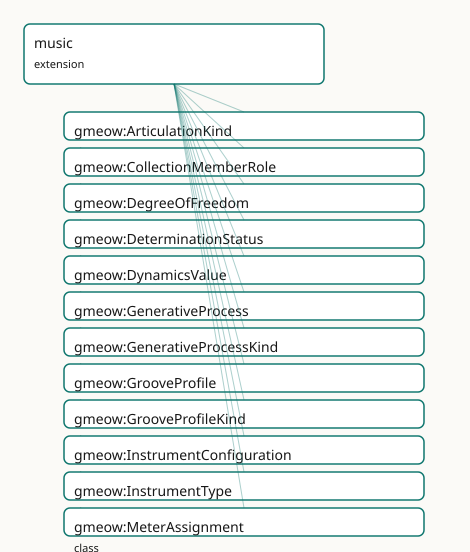

GMEOW Music — frame-relative content, lossy notation projections
- IRI: https://blackcatinformatics.ca/gmeow/slices/music
- Tier: extension
Group: extensions
What This Slice Covers
This slice owns 649 terms and contributes 45 mapping or projection rows. Use it when its terms match the native fact you want to preserve; use the linkage tables to see how those facts leave GMEOW for consumer vocabularies.
Dependencies
gmeow:slices/creative-worksgmeow:slices/documentsgmeow:slices/eventsgmeow:slices/kernelgmeow:slices/languagegmeow:slices/notationgmeow:slices/observationsgmeow:slices/placesgmeow:slices/provenancegmeow:slices/standpointgmeow:slices/temporalgmeow:slices/versions
Consumers
- The GTS music-package single-file format, the MCP analysis-claims surface, and the 19-case stress corpus that closes the music design.
Local Map

Examples
Score As Lossy Projection
- Source:
slices/extensions/music/examples/score-as-lossy-projection.ttl - GMEOW terms:
gmeow:DegreeOfFreedom,gmeow:Expression,gmeow:MusicalWork,gmeow:ScoreEdition,gmeow:determinacyCrisp,gmeow:determinationDelegatedPerformer,gmeow:dofParameter,gmeow:dofStatus,gmeow:dofWork,gmeow:embodies
# SPDX-FileCopyrightText: 2026 Blackcat Informatics® Inc. <paudley@blackcatinformatics.ca>
# SPDX-License-Identifier: CC-BY-4.0
#
# Worked example: the score is NOT the work — it is one lossy projection of it
# (, , P12). The slice's thesis is "frame-relative musical content; every
# notation is a lossy projection." Here a MusicalWork sits at the head of the WEMI
# spine. A printed gmeow:ScoreEdition (a Manifestation) embodies a notated
# Expression — but the notation FIXES only some musical parameters and DELEGATES
# others to the performer (gmeow:DegreeOfFreedom with determinationDelegatedPerformer).
# Two performed Expressions realize the very same work and agree on everything the
# score fixes (pitch, duration over the 12-EDO gmeow:tuningSystem12EDO frame) yet
# legitimately diverge on timbre and dynamics — the parameters the page never
# carried. That divergence is the proof of loss: the score under-determines the
# work, and the missing information lives in the performance, not the paper.
@prefix gmeow: <https://blackcatinformatics.ca/gmeow/> .
@prefix ex: <https://blackcatinformatics.ca/gmeow/examples/music/> .
@prefix rdfs: <http://www.w3.org/2000/01/rdf-schema#> .
# --- WORK: the abstract piece, determinate in what it fixes.
ex:nocturne a gmeow:MusicalWork ;
rdfs:label "Nocturne in E♭ (worked example)"@en ;
gmeow:hasDeterminacy gmeow:determinacyCrisp .
# --- EXPRESSION (notated): what the page actually encodes, framed by 12-EDO.
ex:notatedExpression a gmeow:Expression ;
rdfs:label "engraved notation of the Nocturne"@en ;
gmeow:realizes ex:nocturne ;
gmeow:realizationMode gmeow:realizationModeNotated ;
gmeow:hasReferenceFrame gmeow:tuningSystem12EDO .
# --- MANIFESTATION: the printed score — a lossy projection of the work.
ex:printedScore a gmeow:ScoreEdition ;
rdfs:label "First printed edition"@en ;
gmeow:embodies ex:notatedExpression ;
gmeow:hasManifestationFormat gmeow:formatPrintedScore .
# --- WHAT THE SCORE DROPS: parameters the notation delegates to the performer.
ex:dofTimbre a gmeow:DegreeOfFreedom ;
rdfs:label "timbre left to the performer"@en ;
gmeow:dofWork ex:nocturne ;
gmeow:dofParameter gmeow:musicalParameterTimbre ;
gmeow:dofStatus gmeow:determinationDelegatedPerformer .
ex:dofDynamics a gmeow:DegreeOfFreedom ;
rdfs:label "fine dynamics left to the performer"@en ;
gmeow:dofWork ex:nocturne ;
gmeow:dofParameter gmeow:musicalParameterDynamics ;
gmeow:dofStatus gmeow:determinationDelegatedPerformer .
# --- TWO PERFORMANCES: same work, same fixed pitches/durations, divergent where
# the score is silent — the loss made concrete (neither is privileged, P9).
ex:performanceRubinstein a gmeow:Expression ;
rdfs:label "a warm, rubato-rich performance"@en ;
gmeow:realizes ex:nocturne ;
gmeow:realizationMode gmeow:realizationModePerformed ;
gmeow:hasReferenceFrame gmeow:tuningSystem12EDO ;
gmeow:wasDerivedFrom ex:notatedExpression .
ex:performanceGould a gmeow:Expression ;
rdfs:label "a stark, metronomic performance"@en ;
gmeow:realizes ex:nocturne ;
gmeow:realizationMode gmeow:realizationModePerformed ;
gmeow:hasReferenceFrame gmeow:tuningSystem12EDO ;
gmeow:wasDerivedFrom ex:notatedExpression .
Terms
Classes
| Term | Label | Definition |
|---|---|---|
gmeow:AnalysisProperty |
Analysis Property | An open value vocabulary of analytical dimensions. Never subclassed (Principle 9). |
gmeow:ArticulationKind |
Articulation Kind | An articulation or attack quality applied to a ToneEvent — staccato, legato, tenuto, accent, marcato, pizzicato, harmonic, etc. A value vocabulary of individua... |
gmeow:CollectionMemberRole |
Collection Member Role | The role of a pitch within a collection — tonic/finalis, vādī, samvādī, ghammāz, ascent-only, descent-only, ornamental, or generic member. A value vocabulary o... |
gmeow:DegreeOfFreedom |
Degree of Freedom | A reified relator that positively declares how a musical work or expression determines one musical parameter. Indeterminacy is not an absence; it is a declarat... |
gmeow:DeterminationStatus |
Determination Status | The status of a musical parameter within a DegreeOfFreedom relator — fixed, constrained, free, or delegated to performer/environment/process. An open value voc... |
gmeow:DynamicsValue |
Dynamics Value | A symbolic dynamic level for a ToneEvent — ppp, pp, p, mp, mf, f, ff, fff. A value vocabulary of individuals; measured decibel values are frame-relative Observ... |
gmeow:FormFunction |
Form Function | An open value vocabulary of formal functions. Never subclassed (Principle 9). |
gmeow:GenerativeProcess |
Generative Process | A process that is itself musical content — phasing, stochastic distribution, verbal score, algorithmic rule set. The rule text is human-readable data; formal e... |
gmeow:GenerativeProcessKind |
Generative Process Kind | The kind of a generative process — phasing, stochastic, verbal score, rule-based, algorithmic. An open value vocabulary of individuals; never subclassed (Princ... |
gmeow:GrooveProfile |
Groove Profile | A systematic, repeatable deviation from a strict metric grid — swing ratio, per-grid-position offsets, or a measured microtiming profile. Groove is content, no... |
gmeow:GrooveProfileKind |
Groove Profile Kind | The kind of a GrooveProfile — swing ratio, per-grid-position offsets, or a measured profile. A value vocabulary of individuals; never subclassed. |
gmeow:HarmonicFunction |
Harmonic Function | An open value vocabulary of harmonic functions. Never subclassed (Principle 9). |
gmeow:InstrumentConfiguration |
Instrument Configuration | A configured instrument setup — a relator binding an instrument item or type, one or more modifications, a tuning frame, and an interval. The prepared-piano /... |
gmeow:InstrumentModification |
Instrument Modification | A modification applied to an instrument in an InstrumentConfiguration — prepared, scordatura, capo, mute, electrified, extended range, etc. An open value vocab... |
gmeow:InstrumentType |
Instrument Type | The kind of a musical instrument — piano, violin, drum kit, voice, etc. An open value vocabulary of individuals; never subclassed (Principle 9). Each individua... |
gmeow:MeterAssignment |
Meter Assignment | A reified relator binding a carrier (e.g. a voice), a MetricStructure, and a MusicalTimeSpan. Consecutive assignments model bar-by-bar changes; concurrent assi... |
gmeow:MetricGroup |
Metric Group | One ordered group within a MetricStructure, carrying a rational length and an optional accent weight. Additive meters are sequences of MetricGroups. |
gmeow:MetricModulation |
Metric Modulation | A reified relator declaring a transition from one MusicalTimeFrame to another via a pivot equivalence expressed as a rational pair (e.g. 3/8 = 1/4). The pivot... |
gmeow:MetricStructure |
Metric Structure | A recurring grouping cycle that defines a meter — an ordered set of MetricGroups with rational lengths and optional accent weights. Covers additive meters (2+2... |
gmeow:MusicAnalysisClaim |
Music Analysis Claim | A reified musical-analytical observation: {analysisTarget × analysisProperty × analysisResult × analyst-vantage × theory-frame}. Inherits confidence, displayab... |
gmeow:MusicalParameter |
Musical Parameter | A dimension of musical content whose degree of determination a work or expression declares. An open value vocabulary of individuals; never subclassed (Principl... |
gmeow:MusicalSegment |
Musical Segment | A structural part of a musical work or expression — a graph node carrying musical content at any granularity. Modelled as a gufo:SubKind inheriting identity fr... |
gmeow:MusicalTimeFrame |
Musical Time Frame | A reference frame for musical time — a one-dimensional rational-position axis relative to which durations, spans, tempi, and mappings are expressed. Per-voice... |
gmeow:MusicalTimeSpan |
Musical Time Span | A frame-relative span of musical time, delimited by a rational start position and a rational duration in an explicit MusicalTimeFrame. The musical-time analogu... |
gmeow:NeoRiemannianOperation |
Neo-Riemannian Operation | An open value vocabulary of Neo-Riemannian operations. Never subclassed (Principle 9). |
gmeow:OrnamentProfile |
Ornament Profile | A named convention for ornamentation — a gamaka family, a baroque agrément, a jazz turn — bound to segments or voices. Completes the raga/maqam model by separa... |
gmeow:OrnamentProfileKind |
Ornament Profile Kind | The kind of ornament profile — gamaka family, baroque agrément, raga ornament, jazz turn, etc. An open value vocabulary of individuals; never subclassed (Princ... |
gmeow:PerformanceDecision |
Performance Decision | A reified relator recording one documented traversal of a mobile form during a performance — the performance event, the traversal constraint, and the chosen se... |
gmeow:PerformanceParticipation |
Performance Participation | A reified participation in a musical event — a performance, recording session, take, overdub, rehearsal, or transmission. Adds music-specific details (instrume... |
gmeow:PitchAnchor |
Pitch Anchor | A binding between one degree of a TuningSystem and a physical frequency in an explicit acoustic frame (e.g., A440 vs Baroque A415). Hz is never asserted direct... |
gmeow:PitchCollection |
Pitch Collection | A set or multiset of PitchValues derived from a source (a spectrum, a tuning system, an analysis, or a projection). A projection of canonical frame-relative co... |
gmeow:PitchCollectionKind |
Pitch Collection Kind | The kind of a pitch collection, drawn from an open value vocabulary of individuals (scale, mode, maqam, jins, raga, thaat, pathet, mode of limited transpositio... |
gmeow:PitchCollectionMembership |
Pitch Collection Membership | A reified relator binding a pitch collection, a member pitch value, the role that pitch plays, and an optional context/standpoint. The canonical way to assert... |
gmeow:PitchExpression |
Pitch Expression | A common superclass for pitch-related quantities that are expressed relative to a TuningSystem. PitchValue and PitchInterval are its subkinds; using a named cl... |
gmeow:PitchInterval |
Pitch Interval | A frame-relative directed interval between two pitch values, expressed as an exact ratio or in cents. Intervals are not subclasses of PitchValue; they are a di... |
gmeow:PitchSpelling |
Pitch Spelling | A reified relator binding a frame-relative pitch value, a pitch spelling system, and a spelled name string. Note names (C♯4, sargam Ga, Johnston +7) are projec... |
gmeow:PitchSpellingSystem |
Pitch Spelling System | A named system for spelling frame-relative pitches as note names or symbols — e.g. Common Music Notation staff letters, sargam solfege, Johnston accidentals. A... |
gmeow:PitchTrajectory |
Pitch Trajectory | Continuous pitch as content — an ordered set of control points (musical-time × PitchValue) plus an interpolation kind. Models glissandi, gamaka ornaments, UPIC... |
gmeow:PitchTrajectoryControlPoint |
Pitch Trajectory Control Point | One ordered (musical-time, PitchValue) pair belonging to a PitchTrajectory. |
gmeow:PitchTrajectoryInterpolationKind |
Pitch Trajectory Interpolation Kind | The interpolation mode of a PitchTrajectory — linear in cents, exponential, or stochastic-by-reference. A value vocabulary of individuals; never subclassed (Pr... |
gmeow:PitchValue |
Pitch Value | A frame-relative musical pitch — an exact rational ratio or a cents offset expressed relative to an explicit TuningSystem. Pitch letters (C4, F#) are projectio... |
gmeow:PlayingTechnique |
Playing Technique | A technique used to play or activate a musical instrument — arco, pizzicato, prepared piano, etc. An open value vocabulary of individuals; never subclassed (Pr... |
gmeow:SchenkerLevel |
Schenker Level | An open value vocabulary of Schenkerian structural levels. Never subclassed (Principle 9). |
gmeow:SegmentKind |
Segment Kind | The granularity or functional role of a MusicalSegment, drawn from an open value vocabulary of individuals. Never subclassed (Principle 9). |
gmeow:SegmentTransformation |
Segment Transformation | A reified relator binding a source MusicalSegment, a target MusicalSegment, a transformation type, and an optional parameter. The AI-analysis backbone: asserti... |
gmeow:SetClassLabel |
Set Class Label | An open value vocabulary of pitch-class set labels (Forte names and successors). Never subclassed (Principle 9). |
gmeow:Spectrum |
Spectrum | A first-class information object representing a partial list or recording-region spectrum. Spectra are the source material from which pitch collections may be... |
gmeow:TempoMap |
Tempo Map | A TimeMapping from a musical-time frame to a clock-time frame, expressed piecewise as constant, linear ramp, curve, or measured segments. Tempo is a frame mapp... |
gmeow:TempoMapKind |
Tempo Map Kind | The curve shape of a TempoMap or segment — constant, linear ramp, curve, or measured. A value vocabulary of individuals; never subclassed. |
gmeow:TempoMapSegment |
Tempo Map Segment | One piece of a piecewise TempoMap — a span together with a tempo-map kind (constant, linear ramp, curve, measured) and the segment-level ratio or expression da... |
gmeow:TimbreDescriptor |
Timbre Descriptor | A perceived timbre quality applied to a ToneEvent — bright, dark, breathy, gritty, hollow, etc. A value vocabulary of individuals; never subclassed (Principle... |
gmeow:TimeMapping |
Time Mapping | A declared mapping between two musical time frames or spans. Tuplets, tempo canons, and tempo maps are kinds of TimeMapping; their arithmetic is solver-evaluat... |
gmeow:TimeMappingKind |
Time Mapping Kind | The kind of a TimeMapping — tuplet, tempo canon, tempo map, or unsynchronized ad-lib span. A value vocabulary of individuals; never subclassed. |
gmeow:ToneEvent |
Tone Event | The one structural subkind of MusicalSegment — an atomic sounding unit with pitch content (a PitchValue, a PitchTrajectory, or unpitched), a duration via segme... |
gmeow:TransformationType |
Transformation Type | The kind of segment transformation — transposition, inversion, retrograde, augmentation, diminution, phase shift, reaccentuation, octave displacement, timbre r... |
gmeow:TraversalConstraint |
Traversal Constraint | Mobile form as data: a set of fragments, allowed-successor links (mayFollow), selection rules, and termination rules interpreted by a solver. Graph reachabilit... |
gmeow:TuningSystem |
Tuning System | A reference frame for musical pitch values — a named system that defines how pitch degrees, frequency ratios, or cents are interpreted. 12-EDO is one TuningSys... |
gmeow:TuningSystemKind |
Tuning System Kind | The kind of a tuning system, drawn from an open value vocabulary of individuals (equal division, just intonation, well temperament, instrument-relative, etc.).... |
gmeow:Voice |
Voice | A continuity strand binding MusicalSegments together; may host its own MusicalTimeFrame, TuningSystem, and MetricStructure. The carrier for polymeter, tempo ca... |
Properties
| Term | Label | Definition |
|---|---|---|
gmeow:analysisFrame |
analysis frame | The music-theory reference frame in which the analysis result is expressed — orthogonal to the analyst vantage (Principle 11). |
gmeow:analysisProperty |
analysis property | The analytical dimension being asserted — key, harmony label, meter, form function, motif identity, mode, tuning identification, groove, schema, etc. Functiona... |
gmeow:analysisResult |
analysis result | The result of the analysis — a harmonic function, pitch collection, metric structure, form-function value, set-class label, or other music-theory value. Functi... |
gmeow:analysisTarget |
analysis target | The musical entity being analysed — a MusicalSegment, Expression, Recording, time-region, or other music-theory object. Functional per claim: one target per an... |
gmeow:anchorDegree |
anchor degree | The tuning-system degree that this anchor binds to a frequency (e.g., MIDI note 69 for A440 in 12-EDO). |
gmeow:anchorFrequency |
anchor frequency | The physical frequency in Hz assigned to the anchor degree by this PitchAnchor. |
gmeow:appliesToSegment |
applies to segment | A MusicalSegment to which this ornament profile applies. |
gmeow:appliesToTimeFrame |
applies to time frame | The MusicalTimeFrame to which this GrooveProfile applies. |
gmeow:appliesToVoice |
applies to voice | A Voice to which this ornament profile applies. |
gmeow:assignedMeter |
assigned meter | The MetricStructure assigned to the carrier over the assignment span. |
gmeow:assignmentSpan |
assignment span | The MusicalTimeSpan over which the meter assignment holds. |
gmeow:centsFromOrigin |
cents from origin | A convenience measure of a pitch or interval in cents, generated from the exact ratio by fnRatioToCents. Not canonical; the ratio pair is canonical (Principle... |
gmeow:collectionKind |
collection kind | The kind of pitch collection (scale, mode, maqam, raga, pitch-class set, etc.). Functional: a PitchCollection is of exactly one kind; hybrid or contested categ... |
gmeow:collectionPartOrder |
collection part order | The zero-based position of this pitch collection as a part of a larger collection (e.g. the order of a jins within a maqam). Scoped to the primary parent; if a... |
gmeow:configurationInstrumentType |
configuration instrument type | The kind of instrument this configuration applies to, when no specific item is named (e.g. drop-D electric guitar). Functional per relator. |
gmeow:configurationInterval |
configuration interval | The interval that describes this configuration (e.g. the whole-step drop for drop-D). Functional per relator; optional because some modifications (prepared pia... |
gmeow:configurationModification |
configuration modification | A modification applied in this configuration — prepared, scordatura, capo, mute, electrified, extended range, etc. Non-functional so that compound modification... |
gmeow:configurationOf |
configuration of | The specific instrument item this configuration applies to — a PhysicalObject (e.g. a 1959 Les Paul), an InformationObject (e.g. a synth plugin), or any other... |
gmeow:configurationTuningFrame |
configuration tuning frame | The tuning frame relative to which this configuration is expressed (Principle 11). Functional per relator. |
gmeow:constraintAppliesTo |
constraint applies to | The work, expression, or performance to which this TraversalConstraint applies. |
gmeow:constraintFunction |
constraint function | An optional FnO function reference that interprets the selection and termination rules (Principle 12). |
gmeow:constraintText |
constraint text | Human-readable selection and termination rules for the mobile form. Language-tagged; at most one value per language (Principle 9). |
gmeow:controlPointOfTrajectory |
control point of trajectory | The PitchTrajectory to which this control point belongs. Functional: a control point belongs to exactly one trajectory. |
gmeow:controlPointOrder |
control point order | The zero-based order of this control point within its PitchTrajectory. |
gmeow:controlPointPitch |
control point pitch | The frame-relative PitchValue of this control point. |
gmeow:controlPointTimeFrame |
control point time frame | The MusicalTimeFrame in which the control point's time position is expressed. |
gmeow:controlPointTimePositionDenominator |
control point time position denominator | The denominator of the rational time position of this control point in its MusicalTimeFrame. Always positive. |
gmeow:controlPointTimePositionNumerator |
control point time position numerator | The numerator of the rational time position of this control point in its MusicalTimeFrame. |
gmeow:decisionConstraint |
decision constraint | The TraversalConstraint whose rules this PerformanceDecision satisfies. |
gmeow:decisionPerformance |
decision performance | The performance event in which this traversal decision was made. |
gmeow:decisionSequence |
decision sequence | A human-readable record of the chosen fragment traversal order for one performance. |
gmeow:degreeCount |
degree count | The number of pitch degrees available within one period of the tuning system (e.g., 12 for 12-EDO, 13 for Bohlen-Pierce). |
gmeow:derivedFromSpectrum |
derived from spectrum | Relates a PitchCollection to the Spectrum it was derived from. The actual derivation is performed by fnSpectrumToPitchCollection (Principle 12). |
gmeow:dividedIntervalDenominator |
divided interval denominator | The denominator of the interval that an equal-division tuning divides (e.g., 1 for the octave 2/1). |
gmeow:dividedIntervalNumerator |
divided interval numerator | The numerator of the interval that an equal-division tuning divides (e.g., 2 for the octave 2/1; 3 for the Bohlen-Pierce tritave 3/1). |
gmeow:divisionCount |
division count | For equal-division tunings, the number of equal divisions of the period (e.g., 12 for 12-EDO, 19 for 19-EDO). |
gmeow:dofConstraintFunction |
degree-of-freedom constraint function | An optional FnO function reference that evaluates or validates the constraint text (Principle 12). |
gmeow:dofConstraintText |
degree-of-freedom constraint text | A human-readable statement of the constraint, boundary, or delegation contract for this parameter. Language-tagged; at most one value per language (Principle 9... |
gmeow:dofExpression |
degree-of-freedom expression | The Expression whose parameter determination this DegreeOfFreedom declares. Exactly one of dofWork or dofExpression is required per relator; SHACL enforces the... |
gmeow:dofParameter |
degree-of-freedom parameter | The musical parameter whose determination status is declared (pitch, duration, order, tempo, dynamics, timbre, instrumentation, performer count, sound content,... |
gmeow:dofStatus |
degree-of-freedom status | The determination status of the parameter in this DegreeOfFreedom relator. |
gmeow:dofWork |
degree-of-freedom work | The Work whose parameter determination this DegreeOfFreedom declares. Exactly one of dofWork or dofExpression is required per relator; SHACL enforces the XOR (... |
gmeow:grooveGridUnit |
groove grid unit | The metric grid unit to which the groove profile applies, expressed as a human-readable fraction (e.g. "1/16"). |
gmeow:grooveKind |
groove kind | The kind of groove profile (swing ratio, position offsets, measured). |
gmeow:grooveProfileData |
groove profile data | Solver-interpreted data for the groove profile (e.g. a JSON literal of per-grid-position offsets or a swing ratio). |
gmeow:groupAccentWeight |
group accent weight | An optional accent weight for a MetricGroup, relative to the other groups in the same MetricStructure. |
gmeow:groupLengthDenominator |
group length denominator | The denominator of the rational length of a MetricGroup. Always positive. |
gmeow:groupLengthNumerator |
group length numerator | The numerator of the rational length of a MetricGroup. |
gmeow:hasMetricGroup |
has metric group | Relates a MetricStructure to one of its ordered MetricGroups. Non-functional: a structure typically has many groups. |
gmeow:hasMusicalTimeFrame |
has musical time frame | Relates a MusicalTimeSpan to the MusicalTimeFrame in which its start and duration are expressed. Non-functional globally so that coexisting frames may be asser... |
gmeow:hasTempoMapSegment |
has tempo map segment | Links a TempoMap to one of its piecewise segments. |
gmeow:hasTuningFrame |
has tuning frame | The tuning system relative to which this pitch value or interval is expressed. Non-functional globally so that higher-level musical entities may carry multiple... |
gmeow:hasVoice |
has voice | Relates a musical work, expression, or segment to one of its voices. Non-functional: a work may have many voices, and a voice may participate in many works. |
gmeow:hsNumber |
Hornbostel–Sachs number | The Hornbostel–Sachs classification number for this instrument type, as a literal string (e.g. "314.122-4-8" for piano). Optional; carried as a literal because... |
gmeow:interpolationKind |
interpolation kind | The interpolation mode between control points (linearCents, exponential, stochasticByReference). |
gmeow:mapRatioDenominator |
map ratio denominator | The denominator of the rational ratio carried by a TimeMapping (e.g. 2 for a 3:2 tuplet). Always positive. |
gmeow:mapRatioNumerator |
map ratio numerator | The numerator of the rational ratio carried by a TimeMapping (e.g. 3 for a 3:2 tuplet). |
gmeow:mapsFrame |
maps frame | The source ReferenceFrame that a TimeMapping maps from. |
gmeow:mapsFromSpan |
maps from span | An optional source MusicalTimeSpan when the mapping is scoped to a specific span rather than the whole frame. |
gmeow:mapsToFrame |
maps to frame | The target ReferenceFrame that a TimeMapping maps to. |
gmeow:mapsToSpan |
maps to span | An optional target MusicalTimeSpan when the mapping is scoped to a specific span rather than the whole frame. |
gmeow:mayFollow |
may follow | A directed allowed-successor link between mobile-form fragments. The fragment graph is data interpreted by fnTraverseMobileForm; no transitive, symmetric, or c... |
gmeow:membershipCollection |
membership collection | The pitch collection that this membership relator belongs to. Functional per relator: one collection per membership. |
gmeow:membershipContext |
membership context | An optional context or standpoint that scopes this membership — e.g. an ascent/descent passage, a theoretical tradition, or an analytical framework. Non-functi... |
gmeow:membershipDegreeIndex |
membership degree index | The zero-based degree index of the member pitch within the collection, when the collection has a conventional ordering (e.g. scale degree 0 = tonic/finalis). O... |
gmeow:membershipPitch |
membership pitch | The pitch value that is a member of the collection in this membership. Functional per relator: one pitch per membership. |
gmeow:membershipRole |
membership role | The role the pitch plays in this collection (tonic/finalis, vādī, samvādī, ghammāz, ascent-only, descent-only, ornamental, or generic member). Functional per r... |
gmeow:meterCarrier |
meter carrier | The entity (voice, performer, or part) that carries the assigned meter. |
gmeow:metricGroupOrder |
metric group order | The zero-based position of this MetricGroup within its MetricStructure. |
gmeow:metricStructureOf |
metric structure of | The entity (a work, section, or voice) whose metric cycle this MetricStructure defines. |
gmeow:modulationFromFrame |
modulation from frame | The source MusicalTimeFrame of a MetricModulation. |
gmeow:modulationToFrame |
modulation to frame | The target MusicalTimeFrame of a MetricModulation. |
gmeow:ornamentDescription |
ornament description | A human-readable description of the ornament convention and its execution. Language-tagged; at most one value per language (Principle 9). |
gmeow:ornamentProfileKind |
ornament profile kind | The kind of ornament profile (gamaka family, baroque agrément, etc.). |
gmeow:ornamentReferenceFrame |
ornament reference frame | The tuning system relative to which the ornament profile's pitch gestures are expressed (Principle 11). |
gmeow:participationConfiguration |
participation configuration | The instrument configuration used in this participation. Functional per relator. Range elaborated in instruments and configurations. |
gmeow:participationInstrument |
participation instrument | The kind of instrument involved in this performance participation. One instrument type per PerformanceParticipation is recommended; mint one participation per... |
gmeow:participationInstrumentItem |
participation instrument item | The specific instrument item used in this participation — the particular 1959 Les Paul (a PhysicalObject), a synth plugin (an InformationObject), the named dru... |
gmeow:participationPart |
participation part | The musical part or role the participant performed — e.g. bass line, lead vocal, first violin. Range intentionally open (the tenurePosition precedent) so a par... |
gmeow:participationTechnique |
participation technique | The playing technique used in this participation. Functional per relator. |
gmeow:performanceOf |
performance of | Relates a musical performance event to the creative work it performs — typically an Expression interpreting a known version, or a Work directly for an improvis... |
gmeow:pitchAnchorOf |
pitch anchor of | The TuningSystem that this PitchAnchor belongs to. Functional: an anchor is defined for exactly one TuningSystem. |
gmeow:pitchDegree |
pitch degree | An optional tuning-system degree index associated with this pitch value (e.g., degree 0 = origin, degree 7 = fifth in 12-EDO). |
gmeow:pivotSourceValue |
pivot source value | The source side of a metric-modulation pivot equivalence, expressed as a human-readable rational string (e.g. "3/8"). |
gmeow:pivotTargetValue |
pivot target value | The target side of a metric-modulation pivot equivalence, expressed as a human-readable rational string (e.g. "1/4"). |
gmeow:primeLimit |
prime limit | For just-intonation tunings, the largest prime factor allowed in interval ratios (e.g., 5-limit, 7-limit, 11-limit). |
gmeow:processFunction |
process function | An FnO function reference that realizes the process, e.g. fnRealizePhasing or fnRealizeStochasticProcess (Principle 12). |
gmeow:processKind |
process kind | The kind of generative process (phasing, stochastic, verbal score, rule-based, algorithmic). |
gmeow:processParameter |
process parameter | An input parameter to the generative process — a PitchInterval, TimeMapping, distribution description, or other entity. Non-functional: a process may have many... |
gmeow:processRuleText |
process rule text | A human-readable statement of the generative rule (e.g. 'two voices begin in unison; one accelerates by one beat every X measures until re-aligned'). Language-... |
gmeow:ratioDenominator |
ratio denominator | The denominator of an exact pitch or interval ratio. Always a positive integer. |
gmeow:ratioNumerator |
ratio numerator | The numerator of an exact pitch or interval ratio. Never a float; paired with ratioDenominator for the canonical rational form. |
gmeow:segmentKind |
segment kind | The granularity or functional role of this MusicalSegment (riff, motif, phrase, section, talea, color,...). Functional: a segment is of exactly one kind; cont... |
gmeow:segmentMapRatioDenominator |
segment map ratio denominator | The denominator of the segment-level constant mapping ratio; must be a positive integer. |
gmeow:segmentMapRatioNumerator |
segment map ratio numerator | The numerator of the segment-level constant mapping ratio (musical units per clock unit or vice versa). |
gmeow:segmentSpan |
segment span | The MusicalTimeSpan over which this segment applies — a TempoMapSegment or a MusicalSegment. The domain is deliberately left open so the same property serves b... |
gmeow:segmentTempoMapKind |
segment tempo map kind | The curve kind of this TempoMapSegment (constant, linear ramp, curve, measured). |
gmeow:spelledName |
spelled name | The note-name string produced by this spelling, e.g. "C♯4", "Ga", "+7". Functional per relator: one spelled name per spelling. |
gmeow:spellingPitch |
spelling pitch | The frame-relative pitch value that this spelling names. Functional per relator: one pitch per spelling. |
gmeow:spellingSystem |
spelling system | The pitch spelling system in which the name is expressed (e.g. CMN staff, sargam, Johnston). Functional per relator: one system per spelling. |
gmeow:tempoMapSegmentOf |
tempo map segment of | The TempoMap that this segment belongs to. Functional per segment: one parent TempoMap. |
gmeow:tempoRatioApprox |
tempo ratio approximation | A generated decimal approximation of an irrational tempo ratio, produced from tempoRatioExpression by the solver. A lossy projection, not the canonical value. |
gmeow:tempoRatioExpression |
tempo ratio expression | A canonical symbolic expression for an irrational tempo ratio (e.g. "sqrt(2)/2"), stored as a literal and never reasoner-parsed. The generated decimal approxim... |
gmeow:timbreObservationResult |
timbre observation result | The timbre descriptor assigned to an observed ToneEvent by this Observation. Semantically plays the gmeow:observationResult role, but it is NOT declared rdfs:s... |
gmeow:timeDurationDenominator |
time duration denominator | The denominator of the rational duration of a MusicalTimeSpan in its frame. Always positive. |
gmeow:timeDurationNumerator |
time duration numerator | The numerator of the rational duration of a MusicalTimeSpan in its frame. |
gmeow:timeMappingKind |
time mapping kind | The kind of a TimeMapping (tuplet, tempo canon, metric modulation, groove, etc.). Functional: a TimeMapping is of exactly one kind. |
gmeow:timeStartDenominator |
time start denominator | The denominator of the rational start position of a MusicalTimeSpan in its frame. Always positive. |
gmeow:timeStartNumerator |
time start numerator | The numerator of the rational start position of a MusicalTimeSpan in its frame. |
gmeow:toneEventArticulation |
tone event articulation | The articulation or attack quality applied to this ToneEvent. |
gmeow:toneEventDynamics |
tone event dynamics | The symbolic dynamic level of this ToneEvent (ppp... fff). Measured decibel observations use the observation layer, not this shortcut. |
gmeow:toneEventIsUnpitched |
tone event is unpitched | True when this ToneEvent has no definite pitch (e.g. percussion, noise). Mutually exclusive with toneEventPitchValue and toneEventPitchTrajectory. |
gmeow:toneEventPitchTrajectory |
tone event pitch trajectory | A continuous pitch trajectory sounded by this ToneEvent. Mutually exclusive with toneEventPitchValue and toneEventIsUnpitched. |
gmeow:toneEventPitchValue |
tone event pitch value | A frame-relative pitch value sounded by this ToneEvent. Mutually exclusive with toneEventPitchTrajectory and toneEventIsUnpitched; SHACL enforces at most one p... |
gmeow:toneEventTimbre |
tone event timbre | A timbre descriptor applied to this ToneEvent. This shortcut asserts one descriptor without provenance context; contested or attributed descriptors are modelle... |
gmeow:trajectoryControlPoint |
trajectory control point | Relates a PitchTrajectory to one of its ordered control points. Non-functional: a trajectory has many control points. |
gmeow:transformationParameter |
transformation parameter | An optional parameter qualifying the transformation — e.g. a PitchInterval for transposition, a MetricStructure for reaccentuation, or another entity. The exac... |
gmeow:transformationSource |
transformation source | The source MusicalSegment of this transformation. |
gmeow:transformationTarget |
transformation target | The target MusicalSegment produced by this transformation. |
gmeow:transformationType |
transformation type | The kind of transformation relating source and target (transposition, inversion, retrograde,...). |
gmeow:tuningAnchor |
tuning anchor | Relates a TuningSystem to one of its PitchAnchors (e.g., A440 vs A415). Non-functional: a TuningSystem may be anchored differently in different performances or... |
gmeow:tuningKind |
tuning kind | The kind of tuning system (equal division, just intonation, well temperament, etc.). Functional: a TuningSystem is of exactly one kind; hybrid systems are mode... |
gmeow:voiceMetricStructure |
voice metric structure | The MetricStructure hosted by this Voice. Functional per closed-world shape; coexisting meters are statement-layer claims. |
gmeow:voiceOf |
voice of | The work, expression, or segment that this voice belongs to. Non-functional: voices may be reused across structures. |
gmeow:voiceTimeFrame |
voice time frame | The MusicalTimeFrame hosted by this Voice. Functional per closed-world shape; coexisting frames are statement-layer claims (Principle 11). |
gmeow:voiceTuningFrame |
voice tuning frame | The TuningSystem hosted by this Voice. Functional per closed-world shape; coexisting tunings are statement-layer claims (Principle 11). |
Individuals
| Term | Label | Definition |
|---|---|---|
gmeow:analysisPropertyFormFunction |
form function | The formal function of a segment. |
gmeow:analysisPropertyGroove |
groove | A groove or rhythmic feel classification. |
gmeow:analysisPropertyHarmonyLabel |
harmony label | A chord or harmonic-function label. |
gmeow:analysisPropertyKey |
key | The tonal key of a passage or segment. |
gmeow:analysisPropertyMeter |
meter | The meter or metric structure of a span. |
gmeow:analysisPropertyMode |
mode | A mode, raga, maqam, or pathet identity. |
gmeow:analysisPropertyMotifIdentity |
motif identity | The identity of a motif or theme. |
gmeow:analysisPropertySchema |
schema | A harmonic or melodic schema label. |
gmeow:analysisPropertySegment |
segment | A structural or timed segment boundary or label, aligned to JAMS-style segment annotations. |
gmeow:analysisPropertyTuningIdentification |
tuning identification | Identification of the tuning system in use. |
gmeow:articulationAccent |
accent | An emphasis on a particular tone event. |
gmeow:articulationHarmonic |
harmonic | A string harmonic articulation. |
gmeow:articulationLegato |
legato | A smooth, connected articulation. |
gmeow:articulationMarcato |
marcato | A strongly accented articulation. |
gmeow:articulationPizzicato |
pizzicato | A plucked-string articulation. |
gmeow:articulationStaccato |
staccato | A short, detached articulation. |
gmeow:articulationTenuto |
tenuto | An articulation indicating a note is held for its full value. |
gmeow:axisMusicAnalysis |
music analysis axis | The single abstract axis of a music-analysis reference frame; specific analytical dimensions are interpreted by the frame's theory, not asserted as coordinates... |
gmeow:collectionMemberRoleAscentOnly |
ascent only | A pitch used only in the ascending form of a collection, as in many ragas. |
gmeow:collectionMemberRoleDescentOnly |
descent only | A pitch used only in the descending form of a collection, as in many ragas. |
gmeow:collectionMemberRoleGhammaz |
ghammāz | The pivot or ghammāz pitch of a jins, often used to modulate to the next jins in a maqam. |
gmeow:collectionMemberRoleMember |
member | A generic collection member with no further specialised role. |
gmeow:collectionMemberRoleOrnamental |
ornamental | A pitch used primarily as an ornament or grace tone around a structural pitch. |
gmeow:collectionMemberRoleSamvadi |
samvādī | The second-most important pitch in a raga, often in a consonant relationship with the vādī. |
gmeow:collectionMemberRoleTonicFinalis |
tonic / finalis | The central pitch of a collection — its tonic or finalis. |
gmeow:collectionMemberRoleVadi |
vādī | The most prominent or sonant pitch in a raga, second only to the tonic in importance. |
gmeow:determinationConstrained |
constrained | The parameter is bounded or shaped by a constraint, but not fully fixed. |
gmeow:determinationDelegatedEnvironment |
delegated to environment | The parameter is delegated to the ambient environment — e.g. ambient sound as content in Cage 4′33″. |
gmeow:determinationDelegatedPerformer |
delegated to performer | The parameter is delegated to performer choice within the performance. |
gmeow:determinationDelegatedProcess |
delegated to process | The parameter is delegated to a generative or algorithmic process. |
gmeow:determinationFixed |
fixed | The parameter is fully determined by the work or expression. |
gmeow:determinationFree |
free | The parameter is left entirely to the performer or environment. |
gmeow:dofFourThirtyThreeDuration |
4′33″ duration constrained | The total duration of 4′33″ is constrained to three movements whose sum is canonically 4 minutes 33 seconds. |
gmeow:dofFourThirtyThreeInstrumentation |
4′33″ instrumentation free | The instrumentation of 4′33″ is free — any instrument or combination may be used. |
gmeow:dofFourThirtyThreeSoundContent |
4′33″ sound content delegated to environment | The sound content of 4′33″ is delegated to the ambient environment; the work is not silent, but its sounding content is not specified by the composer. |
gmeow:dofFourThirtyThreeTacet |
4′33″ tacet fixed | The performers of 4′33″ are explicitly silent throughout; tacet is fixed. |
gmeow:dofGraphicScoreDuration |
graphic score duration delegated to performer | Duration is delegated to performer interpretation in the graphic score fixture. |
gmeow:dofGraphicScoreOrder |
graphic score order delegated to performer | Order is delegated to performer interpretation in the graphic score fixture. |
gmeow:dofGraphicScorePitch |
graphic score pitch delegated to performer | Pitch is delegated to performer interpretation in the graphic score fixture. |
gmeow:dynamicsF |
forte | Loud. |
gmeow:dynamicsFf |
fortissimo | Very loud. |
gmeow:dynamicsFff |
fortississimo | Extremely loud. |
gmeow:dynamicsMf |
mezzo-forte | Moderately loud. |
gmeow:dynamicsMp |
mezzo-piano | Moderately soft. |
gmeow:dynamicsP |
piano | Soft. |
gmeow:dynamicsPp |
pianissimo | Very soft. |
gmeow:dynamicsPpp |
pianississimo | Extremely soft. |
gmeow:fixture1959LesPaul |
1959 Les Paul fixture | A placeholder physical instrument item used to test the participationInstrumentItem Entity range (instruments and configurations). |
gmeow:fixture1959LesPaulConfiguration |
1959 Les Paul stage configuration | An item-level configuration fixture binding the 1959 Les Paul instrument item to an electrified modification and the 12-EDO tuning frame (instruments and confi... |
gmeow:fixtureAnalystA |
fixture analyst A | A placeholder analyst used in the MusicAnalysisClaim fixture. |
gmeow:fixtureDropDGuitarConfiguration |
drop-D electric guitar configuration | A drop-D guitar configuration fixture: electric guitar + scordatura modification + tablature-relative drop-D frame + major-second-down interval. |
gmeow:fixtureFourThirtyThreeWork |
4′33″ | John Cage's 4′33″ as a fixture: a fully specified work whose content is the ambient sound delegated by positive assertion. |
gmeow:fixtureGraphicScoreExpression |
graphic score expression | The Expression realized by the canonical visual graphic score. |
gmeow:fixtureGraphicScoreTranscription |
graphic score CMN transcription | A symbolic CMN transcription of the graphic score, explicitly a standpointed interpretation derived from the visual Manifestation. |
gmeow:fixtureGraphicScoreVisual |
graphic score visual manifestation | The canonical visual Manifestation of the graphic score fixture. |
gmeow:fixtureGraphicScoreWork |
graphic score work fixture | A worked fixture demonstrating the graphic-score doctrine: the visual Manifestation is canonical; symbolic transcriptions are derived interpretations. |
gmeow:fixtureHumanListener |
human listener fixture | A human listener vantage for the timbre fixture. |
gmeow:fixtureHumanTimbreObservation |
human timbre observation fixture | A human listener attributes a bright timbre to the fixture tone event; co-equal with the MIR observation. |
gmeow:fixtureKiranaGharanaStandpoint |
Kirana gharana standpoint fixture | A placeholder standpoint/agent representing the Kirana gharana tradition. |
gmeow:fixtureKiranaLearnerParticipation |
Kirana transmission learner participation | The learner participant in the Kirana transmission fixture. |
gmeow:fixtureKiranaTransmissionEvent |
Kirana gharana transmission event fixture | An oral-tradition teaching event in which Raga Yaman is transmitted from teacher to learner. |
gmeow:fixtureKiranaTransmitterParticipation |
Kirana transmission transmitter participation | The teacher participant in the Kirana transmission fixture. |
gmeow:fixtureKlavierstuckConstraint |
Klavierstück XI traversal constraint | The mobile-form constraint for the Klavierstück XI fixture: choose any fragment that has not been played too often, respecting the mayFollow graph, and stop wh... |
gmeow:fixtureKlavierstuckDecisionOne |
Klavierstück XI decision 1 | Documented traversal A → C → B → D for the Klavierstück XI fixture. |
gmeow:fixtureKlavierstuckDecisionTwo |
Klavierstück XI decision 2 | Documented traversal B → D → A → C for the Klavierstück XI fixture. |
gmeow:fixtureKlavierstuckFragmentA |
Klavierstück XI fragment A | A mobile-form fragment in the Klavierstück XI fixture. |
gmeow:fixtureKlavierstuckFragmentB |
Klavierstück XI fragment B | A mobile-form fragment in the Klavierstück XI fixture. |
gmeow:fixtureKlavierstuckFragmentC |
Klavierstück XI fragment C | A mobile-form fragment in the Klavierstück XI fixture. |
gmeow:fixtureKlavierstuckFragmentD |
Klavierstück XI fragment D | A mobile-form fragment in the Klavierstück XI fixture. |
gmeow:fixtureKlavierstuckPerformanceOne |
Klavierstück XI performance traversal 1 | A documented performance of Klavierstück XI with traversal A → C → B → D. |
gmeow:fixtureKlavierstuckPerformanceTwo |
Klavierstück XI performance traversal 2 | A documented performance of Klavierstück XI with traversal B → D → A → C. |
gmeow:fixtureKlavierstuckXIWork |
Klavierstück XI | Stockhausen's Klavierstück XI as a mobile-form fixture: fragments plus a traversal constraint. |
gmeow:fixtureMIRAgent |
MIR extractor fixture | A machine listening / MIR extractor vantage for the timbre fixture. |
gmeow:fixtureMIRTimbreObservation |
MIR timbre observation fixture | A machine extractor attributes a gritty timbre to the fixture tone event; co-equal with the human observation. |
gmeow:fixtureMathRockWork |
fixture math-rock work | A placeholder musical work used to demonstrate contested genre attribution (music analysis standpoints). |
gmeow:fixtureOralRagaYamanWork |
Raga Yaman — oral tradition work fixture | A placeholder MusicalWork for Raga Yaman as an oral tradition, minted retrospectively and declared vague in ontic determinacy (Principle 9). |
gmeow:fixturePreparedPianoConfiguration |
Cage prepared piano configuration | A prepared-piano configuration fixture: piano + prepared modification over the 12-EDO frame, no interval (timbre change, not tuning change). |
gmeow:fixtureRagaYamanContestedMembership |
Raga Yaman contested membership (suppressed) | A rival scholar's contested membership claim, retained but suppressed from display. |
gmeow:fixtureRagaYamanImprovised1975 |
Raga Yaman improvised expression, 1975 | An improvised Expression of Raga Yaman from 1975. |
gmeow:fixtureRagaYamanKiranaMembership1960 |
Raga Yaman 1960 Kirana gharana membership | Kirana gharana standpoint asserting the 1960 performance belongs to the Raga Yaman lineage. |
gmeow:fixtureRagaYamanKiranaMembership1975 |
Raga Yaman 1975 Kirana gharana membership | Kirana gharana standpoint asserting the 1975 improvisation belongs to the Raga Yaman lineage. |
gmeow:fixtureRagaYamanKiranaMembership1980 |
Raga Yaman 1980 Kirana gharana membership | Kirana gharana standpoint asserting the 1980 performance belongs to the Raga Yaman lineage. |
gmeow:fixtureRagaYamanKiranaSet |
Raga Yaman as performed in the Kirana gharana | A VersionSet representing the Raga Yaman tune family / performance lineage in the Kirana gharana. |
gmeow:fixtureRagaYamanOralExpression |
Raga Yaman oral expression | An oral-tradition Expression of Raga Yaman with no required notated form. |
gmeow:fixtureRagaYamanPerformed1960 |
Raga Yaman performed expression, 1960 | A performed Expression of Raga Yaman from 1960. |
gmeow:fixtureRagaYamanPerformed1980 |
Raga Yaman performed expression, 1980 | A performed Expression of Raga Yaman from 1980. |
gmeow:fixtureReichPhasingExpression |
Reich-style phasing realization | One realization of the Reich-style phasing process, linked by provenance. |
gmeow:fixtureReichPhasingProcess |
Reich-style phasing process | A generative process fixture: two voices begin in unison; one accelerates slightly until it has shifted by one beat, then locks. |
gmeow:fixtureReichPhasingWork |
Reich-style phasing work | A worked musical work fixture whose identity is the phasing process itself. |
gmeow:fixtureRivalScholarStandpoint |
rival scholar standpoint fixture | A placeholder standpoint/agent representing a rival scholar's contested claim. |
gmeow:fixtureRomanNumeralClaim |
fixture Roman-numeral dominant claim | A sample MusicAnalysisClaim asserting a dominant-function harmony in Roman-numeral frame (music analysis standpoints). |
gmeow:fixtureSessionBassist |
fixture session bassist | A placeholder agent representing the bassist in the session fixture. |
gmeow:fixtureSessionComposite |
fixture composite recording | Composite recording derived from the take recordings and the overdub recording in the session fixture. |
gmeow:fixtureSessionDrummer |
fixture session drummer | A placeholder agent representing the drummer in the session fixture. |
gmeow:fixtureSessionEvent |
fixture recording session event | The parent recording session event for the take/overdub fixture. |
gmeow:fixtureSessionExpression |
session expression fixture | The Expression realized by the session work; embodied in every take, overdub, and the composite recording. |
gmeow:fixtureSessionOverdubEvent |
fixture overdub event | An overdub event recorded after take 3 in the session fixture. |
gmeow:fixtureSessionOverdubRecording |
fixture overdub recording | Recording captured by the overdub event in the session fixture. |
gmeow:fixtureSessionTake1Event |
fixture take 1 event | First take event in the session fixture. |
gmeow:fixtureSessionTake1Recording |
fixture take 1 recording | Recording captured by take 1 in the session fixture. |
gmeow:fixtureSessionTake2Event |
fixture take 2 event | Second take event in the session fixture. |
gmeow:fixtureSessionTake2Recording |
fixture take 2 recording | Recording captured by take 2 in the session fixture. |
gmeow:fixtureSessionTake3Event |
fixture take 3 event | Third take event in the session fixture; the target of the who-played-what competency query. |
gmeow:fixtureSessionTake3Recording |
fixture take 3 recording | Recording captured by take 3 in the session fixture. |
gmeow:fixtureSessionWork |
session work fixture | A worked fixture demonstrating the session → takes → overdub → composite recording pattern. |
gmeow:fixtureStructureGlissPointC4 |
glissando start C4 | The start control point of the fixture glissando. |
gmeow:fixtureStructureGlissPointG4 |
glissando end G4 | The end control point of the fixture glissando. |
gmeow:fixtureStructureGlissando |
fixture glissando trajectory | A two-point glissando from C4 to G4 in 12-EDO (stress case 6). |
gmeow:fixtureStructureReaccentuation |
riff A transposed → riff A re-accented | A reaccentuation transformation linking the transposed riff to the re-accented riff. |
gmeow:fixtureStructureRiffA |
riff A | A worked riff fixture used to demonstrate the SegmentTransformation chain (stress case 16). |
gmeow:fixtureStructureRiffAReaccented |
riff A re-accented | The transposed riff A′ with re-distributed accents. |
gmeow:fixtureStructureRiffATransposed |
riff A transposed | Riff A transposed up a minor third. |
gmeow:fixtureStructureToneEventC4 |
fixture tone event C4 | A simple quarter-note C4 tone event in 12-EDO, used as a structural fixture. |
gmeow:fixtureStructureTransposition |
riff A → riff A transposed | A transposition transformation linking riff A to its minor-third transposition. |
gmeow:fixtureStructureVoiceBass |
bass voice | A worked bass voice hosting the riff transformation chain. |
gmeow:fixtureStructureWork |
fixture structure work | A worked musical work fixture that owns the structure-graph fixtures. |
gmeow:fixtureTake3BassParticipation |
fixture take 3 bass participation | The bassist's participation on take 3 — the who-played-what-on-take-3 answer. |
gmeow:fixtureTake3DrumParticipation |
fixture take 3 drum participation | The drummer's participation on take 3 in the session fixture. |
gmeow:fixtureTimbreToneEvent |
fixture timbre tone event | A worked tone-event fixture for the timbre / sensory bridge. |
gmeow:fixtureXenakisStochasticProcess |
Xenakis-style stochastic process | A generative process fixture governed by a probability distribution over pitch and time. |
gmeow:fixtureYamanOrnamentProfile |
Raga Yaman ornament profile | A gamaka ornament profile associated with Raga Yaman: meend between Ni and Sa, andolan on Ga. |
gmeow:fixtureYamanVoice |
Raga Yaman demo voice | A dedicated Voice carrier for the Raga Yaman ornament-profile fixture, isolated from the riff/transformation demo voices. |
gmeow:formFunctionAlap |
ālāp | An unmetered introductory section in Hindustani music. |
gmeow:formFunctionBridge |
bridge | Bridge section. |
gmeow:formFunctionChorus |
chorus | Chorus section. |
gmeow:formFunctionDevelopment |
development | Sonata development. |
gmeow:formFunctionDrop |
drop | A drop or breakdown section, common in electronic and dance music. |
gmeow:formFunctionExposition |
exposition | Sonata exposition. |
gmeow:formFunctionGat |
gat | A composed, metric section in Hindustani music. |
gmeow:formFunctionIntro |
intro | Introduction. |
gmeow:formFunctionOutro |
outro | Outro or closing section. |
gmeow:formFunctionRecapitulation |
recapitulation | Sonata recapitulation. |
gmeow:formFunctionRiff |
riff | A riff-based section. |
gmeow:formFunctionVerse |
verse | Verse section. |
gmeow:frameKindAnalytical |
analytical | A conceptual frame whose coordinates are analytical categories (chord labels, scale degrees, formal functions) rather than physical quantities. |
gmeow:frameRealmMusicAnalysis |
music analysis | The frame realm for analytical theory frames — Roman-numeral, Schenkerian, pc-set, maqam, raga, transformational, corpus-statistical, AI-model, etc. |
gmeow:generativeProcessKindAlgorithmic |
algorithmic | A process realized by an algorithm or computer program. |
gmeow:generativeProcessKindPhasing |
phasing | A process in which two or more voices begin in unison and one gradually shifts in tempo or phase, as in Steve Reich (stress case 19). |
gmeow:generativeProcessKindRuleBased |
rule-based | A process defined by an explicit set of transformational rules. |
gmeow:generativeProcessKindStochastic |
stochastic | A process governed by probability distributions, as in Iannis Xenakis (stress case 6). |
gmeow:generativeProcessKindVerbalScore |
verbal score | A process described by verbal instructions rather than traditional notation. |
gmeow:genreBlues |
blues | The blues music genre. |
gmeow:genreClassical |
classical | The classical music genre. |
gmeow:genreDisco |
disco | A dance music genre derived from funk and soul. |
gmeow:genreElectronic |
electronic | The electronic music genre. |
gmeow:genreFunk |
funk | The funk music genre. |
gmeow:genreFusion |
fusion | A genre blending jazz improvisation with rock/funk rhythms. |
gmeow:genreHipHop |
hip hop | A culture and music genre built on rapping, DJing, and beat-making. |
gmeow:genreJazz |
jazz | The jazz music genre. |
gmeow:genreMathRock |
math rock | A rhythmically complex, indie/post-rock offshoot. |
gmeow:genrePostRock |
post-rock | A rock-derived genre using rock instrumentation outside conventional rock structures. |
gmeow:genreProgressiveRock |
progressive rock | A rock genre emphasizing extended forms and harmonic experimentation. |
gmeow:genreRock |
rock | The rock music genre. |
gmeow:genreSoul |
soul | The soul music genre. |
gmeow:grooveProfileKindMeasured |
measured groove | A groove profile derived from measured microtiming observations. |
gmeow:grooveProfileKindPositionOffsets |
position offsets | A groove profile expressed as per-grid-position time offsets. |
gmeow:grooveProfileKindSwingRatio |
swing ratio | A groove profile expressed as a swing ratio (e.g. 2:1 triplet feel). |
gmeow:grooveProfileSwing |
swing groove profile | A simple swing-ratio groove profile on a 1/16 grid, illustrating systematic microtiming as content (stress case 17). |
gmeow:harmonicFunctionDominant |
dominant | Dominant function. |
gmeow:harmonicFunctionGermanSixth |
German sixth | The German augmented-sixth chord as a harmonic-function label. |
gmeow:harmonicFunctionLeadingTone |
leading-tone | Leading-tone function. |
gmeow:harmonicFunctionMediant |
mediant | Mediant function. |
gmeow:harmonicFunctionSubdominant |
subdominant | Subdominant function. |
gmeow:harmonicFunctionSubmediant |
submediant | Submediant function. |
gmeow:harmonicFunctionSupertonic |
supertonic | Supertonic function. |
gmeow:harmonicFunctionTonic |
tonic | Tonic function. |
gmeow:instrumentModificationCapo |
capo | A capo is placed on a stringed instrument, raising the open-string pitch. |
gmeow:instrumentModificationElectrified |
electrified | The instrument is augmented with electronic pickups, amplification, or signal processing. |
gmeow:instrumentModificationExtendedRange |
extended range | The instrument has additional strings, keys, or sounding elements beyond its conventional range. |
gmeow:instrumentModificationMute |
mute | A mute is applied to alter the timbre or volume of the instrument. |
gmeow:instrumentModificationPrepared |
prepared | The instrument is prepared — objects are inserted on or between sounding elements to alter timbre (e.g. Cage prepared piano). |
gmeow:instrumentModificationScordatura |
scordatura | The instrument is tuned away from its standard tuning (e.g. drop-D guitar, solo violin scordatura). |
gmeow:instrumentTypeAdaptedGuitar |
adapted guitar | A guitar adapted for a non-standard tuning or playing technique, as in Harry Partch's instrumentarium. No direct MIMO entry exists. |
gmeow:instrumentTypeDoubleBass |
double bass | The largest and lowest-pitched bowed string instrument in the modern symphony orchestra. |
gmeow:instrumentTypeDrumKit |
drum kit | A collection of drums, cymbals, and other percussion instruments played by a single drummer. |
gmeow:instrumentTypeElectricGuitar |
electric guitar | A guitar that uses one or more pickups to convert string vibration into electrical signals. |
gmeow:instrumentTypeGamelan |
gamelan | An ensemble of percussion instruments from Indonesia, treated here as a single instrument-type for performance-credit purposes. |
gmeow:instrumentTypeModularSynth |
modular synthesizer | A synthesizer composed of separate modules connected by patch cables, often voltage-controlled. |
gmeow:instrumentTypePiano |
piano | A keyboard instrument in which strings are struck by hammers. |
gmeow:instrumentTypeSitar |
sitar | A plucked stringed instrument used in Hindustani classical music. |
gmeow:instrumentTypeTabla |
tabla | A pair of twin hand drums used in Hindustani classical music. |
gmeow:instrumentTypeTurntables |
turntables | A pair of phonograph turntables used as a musical instrument, especially in DJing and turntablism. No direct MIMO entry exists. |
gmeow:instrumentTypeViolin |
violin | A bowed string instrument with four strings tuned in fifths. |
gmeow:instrumentTypeVoice |
voice | The human voice as a musical instrument. No MIMO exactMatch exists for the voice as instrument; aligned where possible by reference (Principle 5). |
gmeow:interpolationExponential |
exponential | Exponential interpolation between control points. |
gmeow:interpolationLinearCents |
linear cents | Linear interpolation on a logarithmic cents scale between control points. |
gmeow:interpolationStochasticByReference |
stochastic by reference | Interpolation governed by a stochastic process referenced by an FnO function or external solver (Principle 12). |
gmeow:lossDropsDynamics |
loss: drops dynamics | Dynamic markings (loudness, accent, articulation) are not encoded in the notation. |
gmeow:lossDropsInstrumentation |
loss: drops instrumentation | The specific instrument set or instrumentation is not encoded in the notation. |
gmeow:lossDropsMicrotiming |
loss: drops microtiming | Systematic timing deviations (swing, groove, Dilla feel) are not encoded as explicit frame-relative offsets. |
gmeow:lossDropsPerformerCount |
loss: drops performer count | The number of performers or voices is not explicitly encoded in the notation. |
gmeow:lossDropsSpatialSoundContext |
loss: drops spatial/sound context | The environmental sound content or spatial location of musical events is not encoded in the notation. |
gmeow:lossDropsSpectralDerivation |
loss: drops spectral derivation | The spectral source of pitch collections is discarded; only a subset of derived pitches is encoded. |
gmeow:lossDropsTacet |
loss: drops tacet | The explicit instruction that a part is silent (tacet) is not separately encoded in the notation. |
gmeow:lossDropsTimbre |
loss: drops timbre | Timbre, playing technique, and instrument-specific tone colour are not encoded in the symbolic content. |
gmeow:lossDropsTraversalConstraints |
loss: drops traversal constraints | Mobile-form traversal rules are not representable; only one realized sequence can be encoded. |
gmeow:lossDropsTuningFrame |
loss: drops tuning frame | The explicit TuningSystem reference is lost; only local accidental symbols or pitch-class numbers remain. |
gmeow:lossQuantizesPitchTo12Edo |
loss: quantizes pitch to 12-EDO | The notation can only represent 12-equal-division-of-the-octave pitch classes; other tuning frames are approximated or unrepresentable. |
gmeow:lossQuantizesTimeToRationalGrid |
loss: quantizes time to a rational grid | The notation represents time as a hierarchy of rational note values under a single meter and tempo; continuous tempo maps and irrational ratios are approximate... |
gmeow:lossSymbolizesContinuousTrajectory |
loss: symbolizes continuous trajectory | Continuous pitch trajectories (glissandi, portamenti, UPIC shapes) are reduced to discrete note symbols or graphic approximations. |
gmeow:membershipMessiaenASharp |
Messiaen ASharp membership | Membership of pitchValue12EDOASharp4 in pitchCollectionMessiaenMode1. |
gmeow:membershipMessiaenC |
Messiaen C membership | Membership of pitchValue12EDOOrigin in pitchCollectionMessiaenMode1. |
gmeow:membershipMessiaenD |
Messiaen D membership | Membership of pitchValue12EDOD4 in pitchCollectionMessiaenMode1. |
gmeow:membershipMessiaenE |
Messiaen E membership | Membership of pitchValue12EDOE4 in pitchCollectionMessiaenMode1. |
gmeow:membershipMessiaenFSharp |
Messiaen FSharp membership | Membership of pitchValue12EDOFSharp4 in pitchCollectionMessiaenMode1. |
gmeow:membershipMessiaenGSharp |
Messiaen GSharp membership | Membership of pitchValue12EDOGSharp4 in pitchCollectionMessiaenMode1. |
gmeow:membershipPCSet0 |
PCSet 0 membership | Membership of pitchValue12EDOOrigin in pitchCollectionPCSet027. |
gmeow:membershipPCSet2 |
PCSet 2 membership | Membership of pitchValue12EDOD4 in pitchCollectionPCSet027. |
gmeow:membershipPCSet7 |
PCSet 7 membership | Membership of pitchValue12EDOFifth in pitchCollectionPCSet027. |
gmeow:membershipRastA |
Rast A membership | Membership of pitchValue24EDOA4 in pitchCollectionRastMaqam. |
gmeow:membershipRastBHalfFlat |
Rast BHalf Flat membership | Membership of pitchValue24EDOBHalfFlat4 in pitchCollectionRastMaqam. |
gmeow:membershipRastC |
Rast C membership | Membership of pitchValue24EDOC4 in pitchCollectionRastMaqam. |
gmeow:membershipRastD |
Rast D membership | Membership of pitchValue24EDOD4 in pitchCollectionRastMaqam. |
gmeow:membershipRastEHalfFlat |
Rast EHalf Flat membership | Membership of pitchValue24EDOEHalfFlat4 in pitchCollectionRastMaqam. |
gmeow:membershipRastF |
Rast F membership | Membership of pitchValue24EDOF4 in pitchCollectionRastMaqam. |
gmeow:membershipRastG |
Rast G membership | Membership of pitchValue24EDOG4 in pitchCollectionRastMaqam. |
gmeow:membershipRastHighC |
Rast High C membership | Membership of pitchValue24EDOC5 in pitchCollectionRastMaqam. |
gmeow:membershipRastJinsCD |
Rast Jins CD membership | Membership of pitchValue24EDOD4 in pitchCollectionRastJinsC. |
gmeow:membershipRastJinsCEHalfFlat |
Rast Jins CEHalf Flat membership | Membership of pitchValue24EDOEHalfFlat4 in pitchCollectionRastJinsC. |
gmeow:membershipRastJinsCF |
Rast Jins CF membership | Membership of pitchValue24EDOF4 in pitchCollectionRastJinsC. |
gmeow:membershipRastJinsCTonic |
Rast Jins CTonic membership | Membership of pitchValue24EDOC4 in pitchCollectionRastJinsC. |
gmeow:membershipRastThirdArabic |
Rast third per Arabic theory | The third degree of Rast is E half-flat, according to Arabic maqam theory. |
gmeow:membershipRastThirdTurkish |
Rast third per Turkish theory | The third degree of Rast is E natural, according to Turkish makam theory. |
gmeow:membershipWustaJinsGA |
Wusta Jins GA membership | Membership of pitchValue24EDOA4 in pitchCollectionWustaJinsG. |
gmeow:membershipWustaJinsGBHalfFlat |
Wusta Jins GBHalf Flat membership | Membership of pitchValue24EDOBHalfFlat4 in pitchCollectionWustaJinsG. |
gmeow:membershipWustaJinsGC |
Wusta Jins GC membership | Membership of pitchValue24EDOC5 in pitchCollectionWustaJinsG. |
gmeow:membershipWustaJinsGTonic |
Wusta Jins GTonic membership | Membership of pitchValue24EDOG4 in pitchCollectionWustaJinsG. |
gmeow:membershipYamanA |
Yaman A membership | Membership of pitchValue12EDOA4 in pitchCollectionYamanRaga. |
gmeow:membershipYamanB |
Yaman B membership | Membership of pitchValue12EDOB4 in pitchCollectionYamanRaga. |
gmeow:membershipYamanC |
Yaman C membership | Membership of pitchValue12EDOOrigin in pitchCollectionYamanRaga. |
gmeow:membershipYamanD |
Yaman D membership | Membership of pitchValue12EDOD4 in pitchCollectionYamanRaga. |
gmeow:membershipYamanE |
Yaman E membership | Membership of pitchValue12EDOE4 in pitchCollectionYamanRaga. |
gmeow:membershipYamanFSharp |
Yaman FSharp membership | Membership of pitchValue12EDOFSharp4 in pitchCollectionYamanRaga. |
gmeow:membershipYamanG |
Yaman G membership | Membership of pitchValue12EDOFifth in pitchCollectionYamanRaga. |
gmeow:meterAssignment44 |
4/4 meter assignment | The third bar of the 5/8->7/8->4/4 sequence. |
gmeow:meterAssignment58 |
5/8 meter assignment | The first bar of the 5/8->7/8->4/4 sequence. |
gmeow:meterAssignment78 |
7/8 meter assignment | The second bar of the 5/8->7/8->4/4 sequence. |
gmeow:meterAssignmentDrums44 |
drums 4/4 polymeter assignment | The drums voice carrying 4/4 in the polymeter fixture; concurrent with guitar 7/8 over the same TempoMap. |
gmeow:meterAssignmentGuitar78 |
guitar 7/8 polymeter assignment | The guitar voice carrying 7/8 in the polymeter fixture; concurrent with drums 4/4 over the same TempoMap. |
gmeow:metricGroup44 |
4/4 group | The single 4/4 group of metricStructure44. |
gmeow:metricGroup58 |
5/8 group | The single 5/8 group of metricStructure58. |
gmeow:metricGroup78Three |
7/8 3/8 group | The final 3/8 group of the additive 7/8 meter. |
gmeow:metricGroup78Two1 |
7/8 first 2/8 group | The first 2/8 group of the additive 7/8 meter. |
gmeow:metricGroup78Two2 |
7/8 second 2/8 group | The second 2/8 group of the additive 7/8 meter. |
gmeow:metricLogarithmic |
logarithmic (cents) | A logarithmic metric in which distances are measured in cents or similar log-frequency units; interval size is additive under composition. |
gmeow:metricModulationCarter |
Carter metric modulation | A metric modulation pivot equivalence: 3/8 in the source frame equals 1/4 in the target frame, as in Carter or Don Caballero (stress case 15). |
gmeow:metricStructure44 |
4/4 metric structure | A simple 4/4 metric structure as one group of four quarter-note beats. |
gmeow:metricStructure58 |
5/8 metric structure | A simple 5/8 metric structure as one group of five eighth-note beats. |
gmeow:metricStructure78 |
7/8 metric structure (2+2+3) | An additive 7/8 metric structure grouped as 2+2+3 (aksak-style). |
gmeow:musicalParameterDuration |
duration | The duration parameter of a musical work or expression. |
gmeow:musicalParameterDynamics |
dynamics | The dynamics parameter of a musical work or expression. |
gmeow:musicalParameterInstrumentation |
instrumentation | The instrumentation parameter of a musical work or expression. |
gmeow:musicalParameterLocation |
location | The spatial or environmental-location parameter of a musical work or expression. |
gmeow:musicalParameterOrder |
order | The ordering or sequence parameter of musical material. |
gmeow:musicalParameterPerformerCount |
performer count | The number-of-performers parameter of a musical work or expression. |
gmeow:musicalParameterPitch |
pitch | The pitch parameter of a musical work or expression. |
gmeow:musicalParameterSoundContent |
sound content | The sound-content parameter of a musical work or expression — what, if anything, is sounded. |
gmeow:musicalParameterTacet |
tacet | The tacet parameter — whether performers are explicitly silent. Used by the Cage 4′33″ fixture. |
gmeow:musicalParameterTempo |
tempo | The tempo parameter of a musical work or expression. |
gmeow:musicalParameterTimbre |
timbre | The timbre parameter of a musical work or expression. |
gmeow:musicalTimeFrameCommon |
common musical time frame | A generic one-dimensional rational musical-time frame used by the worked fixtures. |
gmeow:musicalTimeFrameVoiceDrums |
drums voice musical time frame | A per-voice musical-time frame hosted by the drums voice placeholder (Principle 11). |
gmeow:musicalTimeFrameVoiceGuitar |
guitar voice musical time frame | A per-voice musical-time frame hosted by the guitar voice placeholder (Principle 11). |
gmeow:musicalTimeSpanBarOne |
bar one span | The first bar of the meter-sequence fixture (5/8 = 2.5 quarter-note beats). |
gmeow:musicalTimeSpanBarThree |
bar three span | The third bar of the meter-sequence fixture (4/4 = 4 quarter-note beats). |
gmeow:musicalTimeSpanBarTwo |
bar two span | The second bar of the meter-sequence fixture (7/8 = 3.5 quarter-note beats). |
gmeow:musicalTimeSpanWholeSection |
whole section span | A MusicalTimeSpan covering the whole worked section, from 0 to 10 quarter-note beats. |
gmeow:neoRiemannianL |
leading-tone exchange (L) | Leading-tone exchange. |
gmeow:neoRiemannianN |
Nebenverwandt (N) | Nebenverwandt operation. |
gmeow:neoRiemannianP |
parallel (P) | Parallel operation. |
gmeow:neoRiemannianR |
relative (R) | Relative operation. |
gmeow:neoRiemannianS |
slide (S) | Slide operation. |
gmeow:notationABC |
ABC notation | A text-based music notation format popular in folk music and LLM-native interchange. Monophonic-biased and nonstandard for microtones. |
gmeow:notationByzantineNeume |
Byzantine neumatic notation | The neumatic notation system of Byzantine chant, encoding melodic formulae and mode. |
gmeow:notationCMNStaff |
Common Music Notation (staff) | The Western five-line staff notation of letter names, accidentals, and octave numbers. A symbolic music notation; 12-EDO by default, with ad-hoc microtonal ext... |
gmeow:notationGraphic |
Graphic notation | A visual, non-symbolic notation system where the score image itself is the canonical instruction (e.g. Cardew Treatise, Stockhausen Klavierstück XI). |
gmeow:notationHEJI |
Helmholtz-Ellis JI Pitch Notation | A just-intonation staff notation using symbols for prime-number comma alterations above or below a note. |
gmeow:notationJianpu |
Jianpu | A numbered musical notation system widely used in Chinese-language music practice. |
gmeow:notationJohnstonJI |
Ben Johnston just-intonation notation | A staff notation for just intonation using accidentals to indicate prime-limit comma alterations (e.g. +7, -5). |
gmeow:notationKern |
Humdrum **kern | The Humdrum **kern symbolic music representation. 12-TET letter-pitch bias; designed for musicology pipelines. |
gmeow:notationKlavarskribo |
Klavarskribo | A vertical-staff keyboard notation system that represents notes as black and white bars. |
gmeow:notationLilyPond |
LilyPond | The LilyPond text-based engraving format. Program-not-data: executable layout macros are lost when read as pure symbolic data. |
gmeow:notationMEI |
MEI | The Music Encoding Initiative XML format. Richer than MusicXML for CMN, mensural, neumes, and tablature; still lossy for tuning frames, JI lattices, and mobile... |
gmeow:notationMIDI |
MIDI | The Musical Instrument Digital Interface protocol and file format. A lossy encoding of symbolic musical content: no notation semantics, enharmonic distinction,... |
gmeow:notationMensural |
Mensural notation | Medieval and Renaissance mensural notation with its own time semantics (proportions, coloration, perfection). |
gmeow:notationMusicXML |
MusicXML | The W3C MusicXML 4.0 symbolic music interchange format. Lossy: microtones via bare decimal alter, polymeter via implementation-dependent hacks, no mobile-form... |
gmeow:notationSCL |
Scala.scl | The Scala tuning file format (.scl). Carries a pitch-class list but loses comma/prime-limit theory and keyboard mapping (.kbm) context. |
gmeow:notationSagittal |
Sagittal notation | A microtonal notation system using arrow-like accidentals for arbitrary equal divisions and just intonation. |
gmeow:notationSargam |
Sargam | The solfege-based pitch notation used in Hindustani and Carnatic music (Sa, Re, Ga, Ma, Pa, Dha, Ni). |
gmeow:notationTablature |
Tablature | A notation system that represents finger/fret/string positions on a specific instrument rather than abstract pitch. |
gmeow:ornamentProfileKindBaroqueAgrement |
baroque agrément | A French Baroque ornament sign and its realization convention. |
gmeow:ornamentProfileKindGamaka |
gamaka | A gamaka ornament family, used in South Asian raga performance (stress case 12). |
gmeow:ornamentProfileKindGraceNote |
grace note | A short unaccented note preceding a principal note. |
gmeow:ornamentProfileKindJazzTurn |
jazz turn | A jazz turn or ornament convention. |
gmeow:ornamentProfileKindMordent |
mordent | A rapid alternation between a pitch and its neighbor. |
gmeow:pitchAnchorA415 |
A415 Baroque anchor | A historical Baroque pitch anchor: 12-EDO degree 69 = 415 Hz. The same lattice as A440, but a different anchor (Principle 11). |
gmeow:pitchAnchorA440 |
A440 anchor | The modern concert-pitch anchor: 12-EDO degree 69 = 440 Hz. |
gmeow:pitchCollectionExample |
example pitch collection | A placeholder pitch collection derived from spectrumExample, to be replaced by corpus-derived collections. |
gmeow:pitchCollectionKindJins |
jins | A small melodic unit (typically 4-5 notes) that functions as a building block of a maqam. |
gmeow:pitchCollectionKindMaqam |
maqam | An Arabic/Turkish pitch collection composed of ordered ajnas (sub-collections) and associated with melodic pathways. |
gmeow:pitchCollectionKindMode |
mode | A pitch collection extracted from a scale by choosing a different finalis/tonic, without altering the interval sequence. |
gmeow:pitchCollectionKindModeOfLimitedTransposition |
mode of limited transposition | A pitch collection with fewer than twelve distinct transpositions under octave equivalence, as defined by Olivier Messiaen (stress case 10). |
gmeow:pitchCollectionKindPCSet |
pitch-class set | A set of pitch classes under octave equivalence, the basic object of pitch-class set theory. |
gmeow:pitchCollectionKindPathet |
pathet | A Javanese modal category associating a pitch collection with a melodic contour and a cadential pitch. |
gmeow:pitchCollectionKindRaga |
raga | A South Asian pitch collection with characteristic member roles, ascending/descending conventions, and associated ornament profiles; explicitly more than a sca... |
gmeow:pitchCollectionKindRowSeries |
row or series | An ordered series of pitch classes, as in twelve-tone technique. |
gmeow:pitchCollectionKindScale |
scale | A conventional ordered pitch collection, usually spanning one period of the tuning system (e.g. an octave). |
gmeow:pitchCollectionKindSpectrumCollection |
spectrum collection | A pitch collection derived from a spectrum by a solver (fnSpectrumToPitchCollection), as in spectralism (stress case 7). |
gmeow:pitchCollectionKindThaat |
thaat | A Hindustani parent scale classification from which ragas are derived. |
gmeow:pitchCollectionMessiaenMode1 |
Messiaen mode of limited transposition 1 | Messiaen's first mode of limited transposition: the whole-tone collection C-D-E-F♯-G♯-A♯ in 12-EDO (stress case 10). |
gmeow:pitchCollectionPCSet027 |
pitch-class set [0,2,7] | A simple pitch-class set exemplar: {C,D,G} under octave equivalence in 12-EDO. |
gmeow:pitchCollectionRastJinsC |
Rast jins on C | The lower Rast jins (C-D-E half-flat-F) within Rast maqam. |
gmeow:pitchCollectionRastJinsHighC |
Rast jins on high C | The upper Rast jins (C-D-E half-flat-F) within Rast maqam. |
gmeow:pitchCollectionRastMaqam |
Rast maqam on C | The Arabic Rast maqam on C, composed of ordered ajnas (Rast on C, Wusta on G, Rast on high C), as a maqam seed (stress case 12). |
gmeow:pitchCollectionWustaJinsG |
Wusta jins on G | The Wusta jins (G-A-B half-flat-C) within Rast maqam. |
gmeow:pitchCollectionYamanRaga |
Raga Yaman | A simplified Hindustani Raga Yaman (Kalyan) seed in 12-EDO, illustrating vādī, samvādī, and member roles. |
gmeow:pitchIntervalMajorSecondDown |
major second down | A descending major second, the interval by which a standard guitar low E is dropped to D in drop-D tuning. |
gmeow:pitchIntervalPerfectFifth |
perfect fifth | The just-intonation perfect fifth, ratio 3/2. |
gmeow:pitchIntervalSeptimalComma |
septimal comma | The small interval 64/63 between a just-intonation dominant seventh and a harmonic seventh. |
gmeow:pitchIntervalSyntonicComma |
syntonic comma | The interval 81/80 between a Pythagorean major third and a just-intonation major third. |
gmeow:pitchSpellingCSharp4CMN |
C♯4 in CMN | The CMN spelling "C♯4" for the 12-EDO pitch value at degree 1. |
gmeow:pitchSpellingDFlat4CMN |
D♭4 in CMN | The CMN spelling "D♭4" for the same 12-EDO pitch value as C♯4; an enharmonic peer (Principle 9). |
gmeow:pitchSpellingGaSargam |
Ga in sargam | The sargam spelling "Ga" for the pitch E in Raga Yaman. |
gmeow:pitchSpellingPlus7Johnston |
+7 in Johnston accidentals | The Johnston accidental spelling "+7" for the harmonic seventh ratio 7/4. |
gmeow:pitchSpellingSystemCMN |
Common Music Notation staff | The Western staff notation system of letter names, accidentals, and octave numbers (e.g. C♯4). |
gmeow:pitchSpellingSystemFixedDo |
fixed-do solfège | A solfege system in which do, re, mi are fixed to absolute pitch classes. |
gmeow:pitchSpellingSystemHelmholtz |
Helmholtz pitch notation | The Helmholtz system of octave-distinguished letter names (e.g. c′). |
gmeow:pitchSpellingSystemJohnston |
Ben Johnston accidentals | The just-intonation accidental notation developed by Ben Johnston (e.g. +7 for a 7-limit comma alteration). |
gmeow:pitchSpellingSystemMovableDo |
movable-do solfège | A solfege system in which do is relative to the local tonic of a collection. |
gmeow:pitchSpellingSystemSargam |
sargam | The South Asian solfege spelling system Sa-Re-Ga-Ma-Pa-Dha-Ni. |
gmeow:pitchValue12EDOA4 |
12-EDO A4 | The 12-EDO pitch value A4, nine semitones above C4. |
gmeow:pitchValue12EDOASharp4 |
12-EDO A♯4 / B♭4 | The 12-EDO pitch value A♯4, ten semitones above C4. |
gmeow:pitchValue12EDOB4 |
12-EDO B4 | The 12-EDO pitch value B4, eleven semitones above C4. |
gmeow:pitchValue12EDOC5 |
12-EDO C5 | The 12-EDO pitch value C5, one octave above C4. |
gmeow:pitchValue12EDOCSharp4 |
12-EDO C♯4 / D♭4 | The 12-EDO pitch class one semitone above C4, enharmonically equivalent to D♭4. |
gmeow:pitchValue12EDOD4 |
12-EDO D4 | The 12-EDO pitch value D4, two semitones above C4. |
gmeow:pitchValue12EDOE4 |
12-EDO E4 | The 12-EDO pitch value E4, four semitones above C4. |
gmeow:pitchValue12EDOF4 |
12-EDO F4 | The 12-EDO pitch value F4, five semitones above C4. |
gmeow:pitchValue12EDOFSharp4 |
12-EDO F♯4 | The 12-EDO pitch value F♯4, six semitones above C4. |
gmeow:pitchValue12EDOFifth |
12-EDO fifth (G) | The tempered fifth in 12-EDO, approximating 3/2. |
gmeow:pitchValue12EDOGSharp4 |
12-EDO G♯4 / A♭4 | The 12-EDO pitch value G♯4, eight semitones above C4. |
gmeow:pitchValue12EDOOrigin |
12-EDO origin (C) | The origin degree of 12-EDO, ratio 1/1. |
gmeow:pitchValue24EDOA4 |
24-EDO A4 | The 24-EDO pitch value A4 (900 cents). |
gmeow:pitchValue24EDOBHalfFlat4 |
24-EDO B half-flat 4 | The 24-EDO pitch value B half-flat 4 (1050 cents), the characteristic seventh of Rast. |
gmeow:pitchValue24EDOC4 |
24-EDO C4 | The origin C4 in 24-EDO (0 cents). |
gmeow:pitchValue24EDOC5 |
24-EDO C5 | The 24-EDO pitch value C5 (1200 cents). |
gmeow:pitchValue24EDOD4 |
24-EDO D4 | The 24-EDO pitch value D4 (200 cents). |
gmeow:pitchValue24EDOE4 |
24-EDO E4 | The 24-EDO pitch value E4 (400 cents), the Turkish-natural third sometimes contested with E half-flat in Rast. |
gmeow:pitchValue24EDOEHalfFlat4 |
24-EDO E half-flat 4 | The 24-EDO pitch value E half-flat 4 (350 cents), the characteristic third of Rast. |
gmeow:pitchValue24EDOF4 |
24-EDO F4 | The 24-EDO pitch value F4 (500 cents). |
gmeow:pitchValue24EDOG4 |
24-EDO G4 | The 24-EDO pitch value G4 (700 cents). |
gmeow:pitchValueC4Fixture |
C4 fixture pitch value | A 12-EDO C4 pitch value for the structural fixture, expressed in cents from the origin. |
gmeow:pitchValueG4Fixture |
G4 fixture pitch value | A 12-EDO G4 pitch value for the structural fixture, expressed in cents from the origin. |
gmeow:pitchValueJI7Over4 |
just-intonation 7/4 | The harmonic seventh, ratio 7/4, used as the canonical pitch for the Johnston +7 spelling example. |
gmeow:playingTechniqueArco |
arco | Playing a bowed string instrument with the bow. |
gmeow:playingTechniqueBentNote |
bent note | A continuous pitch inflection from one pitch to another, common in blues, jazz, and many world-music traditions. |
gmeow:playingTechniqueColLegno |
col legno | Striking the strings with the wood of the bow rather than the hair. |
gmeow:playingTechniqueGrowl |
growl | A brass or woodwind timbre produced by growling or fluttering the vocal cords while playing. |
gmeow:playingTechniqueHarmonics |
harmonics | A technique that emphasizes upper partials of a string or air column to produce flute-like overtones. |
gmeow:playingTechniqueKonnakol |
konnakol | Vocal syllables used to articulate and teach rhythmic patterns in South Indian music. |
gmeow:playingTechniqueMultiphonics |
multiphonics | Producing two or more simultaneous pitches on a monophonic instrument, common in wind and string extended techniques. |
gmeow:playingTechniquePizzicato |
pizzicato | Plucking the strings of a bowed string instrument rather than bowing them. |
gmeow:playingTechniquePreparedPiano |
prepared piano | A piano whose sound is altered by placing objects on or between the strings. |
gmeow:playingTechniqueSlap |
slap | A percussive string-playing technique in which the string is struck against the fingerboard. |
gmeow:playingTechniqueTapping |
tapping | Producing notes by tapping the fingerboard or strings, often on guitar or electric bass. |
gmeow:polymeterPattern |
polymeter pattern | The realisation of polymeter as concurrent MeterAssignments on different carriers within one shared MusicalTimeFrame (stress case 14). |
gmeow:profileABC |
ABC notation projection profile | Projection profile for ABC notation. Lossy: monophonic bias, nonstandard microtone extensions. |
gmeow:profileByzantineNeume |
Byzantine neume projection profile | Projection profile for Byzantine neumatic notation. |
gmeow:profileCMNStaff |
Common Music Notation staff projection profile | Projection profile for Western staff notation: represents 12-EDO pitch, rational metric time, order, tempo, dynamics, instrumentation, and performer count; los... |
gmeow:profileGraphic |
Graphic notation projection profile | Projection profile for graphic scores: the visual Manifestation is canonical in the image direction; symbolic transcriptions are standpointed interpretations r... |
gmeow:profileHEJI |
HEJI projection profile | Projection profile for Helmholtz-Ellis JI Pitch Notation. |
gmeow:profileJianpu |
Jianpu projection profile | Projection profile for Jianpu numbered notation. |
gmeow:profileJohnstonJI |
Johnston JI notation projection profile | Projection profile for Ben Johnston just-intonation staff notation. Preserves JI tuning frame up to the declared prime limit. |
gmeow:profileKern |
Humdrum **kern projection profile | Projection profile for **kern. Lossy: 12-TET letter pitch, no tuning-frame declaration. |
gmeow:profileKlavarskribo |
Klavarskribo projection profile | Projection profile for Klavarskribo vertical keyboard notation. |
gmeow:profileLilyPond |
LilyPond projection profile | Projection profile for LilyPond. Program-not-data: executable layout macros are lost when read back as data. |
gmeow:profileMEI |
MEI projection profile | Projection profile for MEI. Lossy: att.tuning limited to named temperaments, JI lattices → cents approximations, mobile form via editorial markup only. |
gmeow:profileMIDI |
MIDI projection profile | Projection profile for MIDI. Lossy: no notation semantics, enharmonics, rests, tuplet structure, or work identity; per-note pitch 7.9 in MIDI 2.0 can carry mic... |
gmeow:profileMensural |
Mensural notation projection profile | Projection profile for mensural notation: carries its own time semantics (proportions, coloration). A CMN transcription of ars subtilior is a lossy, standpoint... |
gmeow:profileMusicXML |
MusicXML projection profile | Projection profile for MusicXML. Lossy: microtones via bare decimal alter, nested tuplets unreliable across implementations, polymeter via hacks, no mobile for... |
gmeow:profileSCL |
Scala.scl projection profile | Projection profile for Scala.scl tuning files. Carries a pitch-class list but loses comma/prime-limit theory and keyboard mapping context. |
gmeow:profileSagittal |
Sagittal notation projection profile | Projection profile for Sagittal microtonal notation. Represents arbitrary EDO and JI pitch classes; time and other parameters are outside its scope. |
gmeow:profileSargam |
Sargam projection profile | Projection profile for Sargam solfege notation. |
gmeow:profileTablature |
Tablature projection profile | Projection profile for tablature: represents instrument-specific finger positions, not abstract pitch; tuning-frame dependent. |
gmeow:schenkerLevelBackground |
background | Background (Urlinie) level. |
gmeow:schenkerLevelForeground |
foreground | Foreground (surface) level. |
gmeow:schenkerLevelMiddleground |
middleground | Middleground level. |
gmeow:segmentKindCell |
cell | A small, compact unit of musical material, often the basis for serial or process works. |
gmeow:segmentKindColor |
color | A recurring pitch pattern in isorhythmic music; paired with talea (stress case 9). |
gmeow:segmentKindDrone |
drone | A sustained or repeated tone or cluster. |
gmeow:segmentKindFragment |
fragment | A mobile or unordered fragment, as in Stockhausen's Klavierstück XI (stress case 4). |
gmeow:segmentKindLoop |
loop | A repeating segment, often in electronic or sampled music. |
gmeow:segmentKindMotif |
motif | A short, characteristic musical idea. |
gmeow:segmentKindPhrase |
phrase | A coherent musical phrase or breath unit. |
gmeow:segmentKindRiff |
riff | A repeated, often rhythmic-melodic figure (stress case 16). |
gmeow:segmentKindSection |
section | A large formal section of a work (verse, chorus, exposition, development). |
gmeow:segmentKindTalea |
talea | A recurring rhythmic pattern in isorhythmic or mensural music; paired with color (stress case 9). |
gmeow:segmentKindToneEventContainer |
tone-event container | A MusicalSegment whose immediate children are ToneEvents. |
gmeow:spectrumExample |
example spectrum | A placeholder spectrum individual for the spectral-derivation stress case (stress case 7). A concrete corpus will replace this with analysed partial lists. |
gmeow:standpointArabicTheory |
Arabic maqam theory | A standpoint representing mainstream Arabic maqam theory. |
gmeow:standpointTranscriberA |
transcriber A | A transcriber standpoint used in the graphic-score fixture. |
gmeow:standpointTurkishTheory |
Turkish makam theory | A standpoint representing Turkish makam theory, which may disagree with Arabic theory about the exact size of the Rast third. |
gmeow:tempoMapCommon |
common constant tempo map | A simple constant TempoMap used by the meter fixtures: one quarter-note beat in musicalTimeFrameCommon maps to one half-second in TAI (e.g. quarter = 120). The... |
gmeow:tempoMapKindConstant |
constant tempo | A TempoMap or segment with a constant mapping ratio. |
gmeow:tempoMapKindCurve |
curved tempo | A TempoMap segment with a non-linear tempo curve. |
gmeow:tempoMapKindLinearRamp |
linear ramp | A TempoMap segment with a linear acceleration or deceleration. |
gmeow:tempoMapKindMeasured |
measured tempo | A TempoMap segment derived from measured performance data. |
gmeow:tempoMapSegmentCommon |
common tempo map segment | The single constant segment of tempoMapCommon: one quarter-note beat maps to one half-second. |
gmeow:theoryFrameAIModel |
AI-model analysis frame | A reference frame whose analytical categories are produced by a machine-learning model. |
gmeow:theoryFrameCorpusStatistical |
corpus-statistical analysis frame | A reference frame whose analytical categories are derived from corpus statistics. |
gmeow:theoryFrameMaqamTheory |
maqam-theory frame | A reference frame for Arabic/Turkish maqam analysis. |
gmeow:theoryFramePathet |
pathet frame | A reference frame for Javanese/Indonesian pathet analysis. |
gmeow:theoryFramePitchClassSet |
pitch-class-set analysis frame | A reference frame for atonal analysis using pitch-class sets and Forte labels. |
gmeow:theoryFrameRagaGrammar |
raga-grammar frame | A reference frame for Hindustani raga analysis. |
gmeow:theoryFrameRomanNumeral |
Roman-numeral analysis frame | A reference frame for harmonic analysis expressed as Roman numerals. |
gmeow:theoryFrameSchenkerian |
Schenkerian analysis frame | A reference frame for Schenkerian reduction and voice-leading analysis. |
gmeow:theoryFrameTransformational |
transformational analysis frame | A reference frame for transformational and voice-leading-space analysis. |
gmeow:timbreDescriptorBreathy |
breathy | A breathy timbre — audible noise-like aspiration mixed with the tone. |
gmeow:timbreDescriptorBright |
bright | A bright timbre — emphasis on high-frequency energy. |
gmeow:timbreDescriptorDark |
dark | A dark timbre — emphasis on low-frequency energy, muted highs. |
gmeow:timbreDescriptorGritty |
gritty | A gritty timbre — rough, distorted, or noisy texture. |
gmeow:timbreDescriptorHollow |
hollow | A hollow timbre — a scooped-out or filtered quality with weak midrange. |
gmeow:timeMappingKindSyncUnsynchronized |
unsynchronized ad-lib | A TimeMapping that marks an unsynchronized ad-lib span bounded by shared clock-time cue anchors, as in Lutoslawski aleatoric counterpoint (stress case 11). |
gmeow:timeMappingKindTempoCanon |
tempo canon | A TimeMapping between two voice time frames in a tempo canon (e.g. Nancarrow's sqrt(2):2). |
gmeow:timeMappingKindTempoMap |
tempo map | A TimeMapping kind for musical-time to clock-time tempo mappings. |
gmeow:timeMappingKindTuplet |
tuplet | A TimeMapping that expresses a tuplet — a rational grouping ratio such as 3:2 or 5:4. |
gmeow:timeMappingSqrt2Canon |
sqrt(2):2 tempo canon mapping | A tempo-canon mapping with an irrational sqrt(2)/2 ratio, as in Nancarrow (stress case 2). The canonical value is the symbolic literal; the decimal is a genera... |
gmeow:timeMappingTuplet32 |
3:2 tuplet mapping | An outer 3:2 tuplet TimeMapping used for the nested tuplet fixture. |
gmeow:timeMappingTuplet54 |
5:4 tuplet mapping | An inner 5:4 tuplet TimeMapping nested inside the 3:2 tuplet fixture. |
gmeow:transformAugmentation |
augmentation | Proportional lengthening of durations. |
gmeow:transformDiminution |
diminution | Proportional shortening of durations. |
gmeow:transformInversion |
inversion | Reflection of intervals around a fixed axis. |
gmeow:transformOctaveDisplacement |
octave displacement | Relocation of pitches by one or more octaves. |
gmeow:transformOrnamentation |
ornamentation | Addition of ornamental material to a source segment. |
gmeow:transformPhaseShift |
phase shift | Displacement of a repeating pattern in time, as in Reich-style phasing (stress case 19). |
gmeow:transformQuotation |
quotation | Inclusion of a source segment as material within a target segment. |
gmeow:transformReaccentuation |
reaccentuation | Re-distribution of metric or dynamic accents. |
gmeow:transformReduction |
reduction | Analytical reduction of a segment to a simpler underlying structure. |
gmeow:transformRetrograde |
retrograde | Reversal of the order of elements; source = target when the segment is internally palindromic (stress case 10). |
gmeow:transformSpectralCompression |
spectral compression | Rescaling of the spectral envelope of a segment (stress case 7). |
gmeow:transformTimbreReorchestration |
timbre reorchestration | Reassignment of a segment to different timbral resources. |
gmeow:transformTransposition |
transposition | Translation of all pitches by a fixed interval. |
gmeow:tuningSystem12EDO |
12-tone equal temperament | The Western common-practice equal division of the octave into 12 semitones. One TuningSystem among many (Principle 9). |
gmeow:tuningSystem19EDO |
19-tone equal temperament | Equal division of the octave into 19 parts, a common microtonal equal temperament. |
gmeow:tuningSystem24EDO |
24-tone equal temperament | Quarter-tone equal division of the octave into 24 parts. |
gmeow:tuningSystem31EDO |
31-tone equal temperament | Equal division of the octave into 31 parts, a closer approximation to meantone and just intonation. |
gmeow:tuningSystemBohlenPierce |
Bohlen-Pierce | An equal division of the tritave (3/1) into 13 steps, a non-octave tuning system. |
gmeow:tuningSystemGuitarDropD |
guitar drop-D tablature frame | A tablature-relative tuning frame for a six-string guitar whose lowest string is tuned down a major second to D, used by the drop-D configuration fixture (inst... |
gmeow:tuningSystemJustIntonation |
just intonation lattice | A generic just-intonation reference frame: pitch values are integer ratios within a prime limit, relative to a chosen origin. |
gmeow:tuningSystemKindAdaptive |
adaptive | A tuning system that changes in response to context, performance, or algorithmic process (e.g., dynamic just intonation, live retuning). |
gmeow:tuningSystemKindEqualDivision |
equal division | A tuning system that divides a fixed interval (usually the octave) into a number of equal parts (e.g., 12-EDO, 19-EDO, 31-EDO). |
gmeow:tuningSystemKindInstrumentRelative |
instrument-relative | A tuning system defined relative to a specific physical instrument or instrument set (e.g., gamelan slendro/pelog). Requires a host (Principle 11). |
gmeow:tuningSystemKindJustIntonation |
just intonation | A tuning system built from integer ratios and a chosen prime limit (e.g., 5-limit, 7-limit, Partch-43). |
gmeow:tuningSystemKindSpectralDerived |
spectral-derived | A tuning system derived from the spectral analysis of a sound or recording (stress case 7). |
gmeow:tuningSystemKindTablatureRelative |
tablature-relative | A tuning system defined relative to a tablature or string/fret configuration rather than to absolute pitch (e.g., alternate guitar tunings, drop-D). |
gmeow:tuningSystemKindUnpitched |
unpitched | A pseudo-tuning for unpitched or indefinite-pitch sounds (e.g., percussion, noise). |
gmeow:tuningSystemKindWellTemperament |
well temperament | A historical temperament in which all keys are usable but each has a distinct character (e.g., quarter-comma meantone, Werckmeister). |
gmeow:tuningSystemPartch43 |
Partch 43-tone just intonation | Harry Partch's 43-tone monophonic just-intonation system, a stress case for large JI tunings (stress case 5). |
gmeow:tuningSystemPelog |
pelog | A Javanese gamelan heptatonic tuning system; like slendro, it is hosted by the instrument set that realises it (Principle 11). |
gmeow:tuningSystemPythagorean |
Pythagorean tuning | A just-intonation-based system built from pure 3/2 fifths (2,3-limit). |
gmeow:tuningSystemQuarterCommaMeantone |
quarter-comma meantone | A Renaissance/Baroque well temperament in which major thirds are pure and fifths are narrowed by a quarter of a syntonic comma. |
gmeow:tuningSystemSlendro |
slendro | A Javanese gamelan pentatonic tuning system; its exact intervals vary by instrument set and are defined relative to the host gamelan (Principle 11). |
gmeow:voiceDrumsPlaceholder |
drums voice placeholder | A drums voice for the polymeter fixture. |
gmeow:voiceGuitarPlaceholder |
guitar voice placeholder | A guitar voice for the polymeter fixture. |
Linkages
- Rows: 45
- Projection profiles:
jams - External vocabularies:
afo,chord,jams,mimo,mo,prov,wd
| Source | Kind | Profile | Predicate/Relation | Target | Evidence |
|---|---|---|---|---|---|
gmeow:DegreeOfFreedom |
equivalence | - |
skos:closeMatch | wd:Q623715 | gmeow-music.sssom.tsv; gmeow:eqMu017; confidence 0.8 |
gmeow:InstrumentType |
equivalence | - |
skos:closeMatch | wd:Q26836418 | gmeow-music.sssom.tsv; gmeow:eqMu027; confidence 0.85 |
gmeow:InstrumentType |
equivalence | - |
skos:closeMatch | wd:Q34379 | gmeow-music.sssom.tsv; gmeow:eqMu025; confidence 0.9 |
gmeow:MetricStructure |
equivalence | - |
skos:closeMatch | wd:Q155234 | gmeow-music.sssom.tsv; gmeow:eqMu013; confidence 0.85 |
gmeow:PerformanceParticipation |
equivalence | - |
skos:closeMatch | prov:Association | gmeow-music.sssom.tsv; gmeow:eqMu022; confidence 0.8 |
gmeow:PitchCollection |
equivalence | - |
skos:closeMatch | chord:Chord | gmeow-music.sssom.tsv; gmeow:eqMuNot010; confidence 0.7 |
gmeow:PitchCollection |
equivalence | - |
skos:closeMatch | wd:Q179651 | gmeow-music.sssom.tsv; gmeow:eqMu007; confidence 0.9 |
gmeow:PitchSpellingSystem |
equivalence | - |
skos:closeMatch | wd:Q233861 | gmeow-music.sssom.tsv; gmeow:eqMu012; confidence 0.9 |
gmeow:PitchValue |
equivalence | - |
skos:closeMatch | wd:Q1760309 | gmeow-music.sssom.tsv; gmeow:eqMu009; confidence 0.85 |
gmeow:TempoMap |
equivalence | - |
skos:closeMatch | wd:Q189214 | gmeow-music.sssom.tsv; gmeow:eqMu014; confidence 0.85 |
gmeow:TimbreDescriptor |
equivalence | - |
skos:closeMatch | afo:AudioFeature | gmeow-music.sssom.tsv; gmeow:eqMu039; confidence 0.8 |
gmeow:TuningSystem |
equivalence | - |
skos:closeMatch | wd:Q723441 | gmeow-music.sssom.tsv; gmeow:eqMu001; confidence 0.9 |
gmeow:determinationDelegatedPerformer |
equivalence | - |
skos:closeMatch | wd:Q1049625 | gmeow-music.sssom.tsv; gmeow:eqMu018; confidence 0.8 |
gmeow:hsNumber |
equivalence | - |
skos:closeMatch | wd:P1762 | gmeow-music.sssom.tsv; gmeow:eqMu026; confidence 0.85 |
gmeow:instrumentTypeDrumKit |
equivalence | - |
skos:closeMatch | mimo:2493 | gmeow-music.sssom.tsv; gmeow:eqMu030; confidence 0.85 |
gmeow:instrumentTypeElectricGuitar |
equivalence | - |
skos:exactMatch | mimo:3236 | gmeow-music.sssom.tsv; gmeow:eqMu029; confidence 0.95 |
gmeow:instrumentTypeGamelan |
equivalence | - |
skos:exactMatch | mimo:2805 | gmeow-music.sssom.tsv; gmeow:eqMu034; confidence 0.9 |
gmeow:instrumentTypeGamelan |
equivalence | - |
skos:closeMatch | wd:Q194492 | gmeow-music.sssom.tsv; gmeow:eqMu036; confidence 0.8 |
gmeow:instrumentTypeModularSynth |
equivalence | - |
skos:closeMatch | mimo:2321 | gmeow-music.sssom.tsv; gmeow:eqMu033; confidence 0.85 |
gmeow:instrumentTypePiano |
equivalence | - |
skos:exactMatch | mimo:2299 | gmeow-music.sssom.tsv; gmeow:eqMu028; confidence 0.95 |
gmeow:instrumentTypeSitar |
equivalence | - |
skos:exactMatch | mimo:3456 | gmeow-music.sssom.tsv; gmeow:eqMu031; confidence 0.95 |
gmeow:instrumentTypeTabla |
equivalence | - |
skos:exactMatch | mimo:2899 | gmeow-music.sssom.tsv; gmeow:eqMu032; confidence 0.95 |
gmeow:notationABC |
equivalence | - |
skos:exactMatch | wd:Q287895 | gmeow-music.sssom.tsv; gmeow:eqMuNot004; confidence 0.95 |
gmeow:notationCMNStaff |
equivalence | - |
skos:closeMatch | wd:Q233861 | gmeow-music.sssom.tsv; gmeow:eqMuNot001; confidence 0.85 |
| ... | ... | ... | ... | ... | 21 more rows |
Guide
GMEOW Music Slice
Frame-relative musical content; every notation is a lossy projection.
This slice is the first full-scale Principle 16 extension. It scaffolds the five-layer music model described in the music design:
- Pitch —
TuningSystemas aReferenceFrame; exact rationalPitchValue;PitchCollectionandPitchSpellingas projections. - Time —
MusicalTimeFrame;TimeMappingandTempoMap;MetricStructure,MeterAssignment,MetricModulation;GrooveProfile. - Structure —
MusicalSegmentgraph;ToneEvent;Voice;SegmentTransformation. - Performance —
DegreeOfFreedom;TraversalConstraint;PerformanceDecision;GenerativeProcess;OrnamentProfile. - Analysis —
MusicAnalysisClaimas standpoint-indexed observations against explicit theory frames.
The structural foundation issue (music universal terms) lands only the extension scaffold and the
universal core touch-points (MusicalWork, Recording, ScoreEdition,
CreativeDerivation, Genre, RealizationMode, and the role/format seeds) in
slices/core/creative-works/module.ttl. Child issues fill the layers above.
Pitch collections and spelling (pitch collections and spelling)
Pitch collections (gmeow:PitchCollection) are categorised by a single
gmeow:PitchCollectionKind value — scale, mode, maqam, jins, raga, thaat,
pathet, mode of limited transposition, pitch-class set, row/series, or spectrum
collection — rather than by subclassing (Principle 9).
Membership is a reified relator (gmeow:PitchCollectionMembership) binding a
collection, a PitchValue, a CollectionMemberRole, and an optional context.
Contested memberships — e.g. the size of the Rast third — coexist as relators
carrying distinct gmeow:accordingTo annotations.
A maqam is composed of ordered ajnas via the universal gmeow:hasPart plus a
local gmeow:collectionPartOrder property on each jins. A raga is a collection
plus member roles such as vādī and samvādī.
Pitch spellings (gmeow:PitchSpelling) are relators binding a PitchValue, a
PitchSpellingSystem, and a spelled name string. Note names (C♯4, sargam Ga,
Johnston +7) are projections of frame-relative pitch, not canonical values;
enharmonic ambiguity is modelled as two co-equal spellings of the same pitch.
Seed fixtures: Rast maqam (ordered ajnas in 24-EDO), Raga Yaman (member roles in
12-EDO), Messiaen's whole-tone mode of limited transposition, the pitch-class
set [0,2,7], and co-equal C♯4 / D♭4 spellings.
Musical time (musical time)
A gmeow:MusicalTimeFrame is the time-layer analogue of TuningSystem: a
reference frame that anchors musical events and defines what it means for one
instant or span to precede, contain, or align with another. A
gmeow:MusicalTimeSpan is a concrete interval within that frame, described by a
rational start position and a rational duration.
gmeow:TimeMapping relates two ReferenceFrames — typically a musical frame
(measure, beat, tatum) and another musical or clock-time frame. Each mapping
carries a gmeow:timeMappingKind from the value vocabulary: tuplet, tempo
canon, tempo map, or unsynchronized ad-lib. It references a solving function
from the FnO catalogue for any arithmetic that the ontology does not assert as
triples (Principle 12). A gmeow:TempoMap is a time-ordered piece-wise mapping
composed of TempoMapSegments; each segment carries its own ratio data, and
segments may abut or overlap when multiple tempi coexist (metric modulation,
metric polyphony).
gmeow:MetricStructure groups gmeow:MetricGroups. A MetricGroup is a
regular pulse layer (e.g. quarter-note beat, eighth-note subdivision) and is
instantiated by gmeow:MeterAssignments that bind a meter signature to a span.
gmeow:MetricModulation records a deliberate equivalence between two pulse
durations across a boundary, making tempo changes derivable rather than
mysterious. gmeow:GrooveProfile captures expressive timing and dynamics
(e.g. swing ratio, lay-back) relative to a metric reference; it is a standpoint-
relative projection, not a literal tempo-map override.
The layer distinguishes polymeter from polyrhythm without inventing new
primitives. In polymeter, concurrent MeterAssignments on different carriers
coexist over one shared tempo context. In polyrhythm, concurrent TimeMapping
ratios over one span encode differing pulse relations that periodically align.
Both coexist within a MusicalTimeFrame.
Seed fixtures: a 5/8 → 7/8 → 4/4 sequence, 7/8-over-4/4 polymeter, nested 5:4 and 3:2 tuplets, a √2:2 mensuration canon, a swing groove, and a Carter-style metric modulation.
Structure graph (structure graph)
A gmeow:MusicalSegment is the single structural node for musical content at
any granularity: riff, motif, phrase, section, fragment, talea, color, drone,
loop, or tone-event container. Granularity is a gmeow:segmentKind value —
there are no subclasses per granularity (Principle 9). Containment rides the
universal gmeow:hasPart / gmeow:partOf spine; placement in musical time is
declared with gmeow:segmentSpan pointing to a MusicalTimeSpan.
gmeow:ToneEvent is the one structural subkind of MusicalSegment — an atomic
sounding unit. Its pitch content is exactly one of a PitchValue, a
PitchTrajectory, or the unpitched flag. Dynamics and articulation are symbolic
value shortcuts; measured dB and timbre analysis are standpointed Observations
or M11 sensory claims.
gmeow:PitchTrajectory models continuous pitch: glissandi, gamaka, UPIC curves.
It owns ordered PitchTrajectoryControlPoints, each carrying a
PitchValue and a rational position inside a MusicalTimeFrame, plus an
interpolationKind. The actual curve evaluation is solver work (Principle 12).
gmeow:Voice is a continuity strand that binds segments and may host its own
MusicalTimeFrame, TuningSystem, and MetricStructure. It is the carrier for
polymeter, tempo canons, and per-voice frames.
gmeow:SegmentTransformation is a relator {source × target × type × parameter}
and the AI-analysis backbone. A transformation may be asserted by composer text
or by an analysis standpoint through the statement layer (Principles 2, 9, 14).
Note-level scale doctrine. Bulk ToneEvent data for real pieces (millions
of events) lives in GTS music-package bundles, not the reasoned core. The
ontology gates the TBox and seed fixtures; package bundles carry the instance
payload (Principles 8, 12, 13).
Seed fixtures: riff A → transposed riff A′ → re-accented riff A″ transformation
chain; a C4 ToneEvent; a two-point C4→G4 glissando trajectory; and a bass
Voice.
Performance: form, process, and indeterminacy (performance constraints)
gmeow:DegreeOfFreedom
A gmeow:DegreeOfFreedom is a relator that positively declares how one parameter
of a MusicalWork or Expression is determined: fixed, constrained, free, or
delegated to performer, environment, or process. Indeterminacy is not an absence;
it is a declared status (Principles 9, 11, 12). Cage's 4′33″ is fully specified
by a set of such cells: duration constrained, tacet fixed, sound content
delegated to the environment, instrumentation free.
gmeow:TraversalConstraint
A gmeow:TraversalConstraint is mobile form as data: fragments, allowed
successor links (gmeow:mayFollow), selection rules, and termination rules.
Graph reachability and termination are solver work; no transitive or chain axiom
is ever asserted over gmeow:mayFollow (Principle 12). Stockhausen's
Klavierstück XI is the seed fixture.
gmeow:PerformanceDecision
A gmeow:PerformanceDecision records one documented traversal of a mobile form
during a performance. Competing traversals of the same work coexist as distinct
relators (Principle 9).
gmeow:GenerativeProcess
A gmeow:GenerativeProcess is musical content that is itself a process —
phasing, stochastic distribution, verbal score, rule set, or algorithm. The
human-readable rule text is canonical; formal realization is delegated to a
solver referenced by gmeow:processFunction (Principle 12). Seed fixtures:
Reich-style phasing and Xenakis-style stochastic processes.
gmeow:OrnamentProfile
A gmeow:OrnamentProfile is a named convention for ornamentation — a gamaka
family, baroque agrément, jazz turn — bound to a MusicalSegment or Voice. It
separates structural pitch membership from expressive execution, completing the
raga/maqam model (Principles 9, 11). Seed fixture: Raga Yaman gamaka profile.
gmeow:mayFollow
gmeow:mayFollow is a directed allowed-successor link between mobile-form
fragments. It is plain data; reachability is computed by
gmeow:fnTraverseMobileForm, never reasoned by the DL engine.
Performance: events and participation (performance events and participation)
Event types and the no-subclass doctrine
There is no gmeow:MusicalPerformance class. A performance is an ordinary
gmeow:Event whose gmeow:eventType carries one or more musical values:
musicalPerformance, concert, recordingSession, take, overdub,
rehearsal, jamSession, soundcheck, DJSet, and transmission (the oral-
tradition teaching event used by M10). Live vs studio is not a type split; it is
eventType × eventLocation (Principles 6, 9, 11).
gmeow:performanceOf
gmeow:performanceOf links an event to the CreativeWork it performs — usually
an Expression interpreting a known version, or a Work directly for an
improvised or oral rendition with no fixed mediating Expression. It is
non-functional: a medley performs several works, and a work is performed by many
events.
gmeow:PerformanceParticipation
gmeow:PerformanceParticipation is a gufo:SubKind of the core
gmeow:Participation relator. It adds music-specific attributes to the universal
participation pattern:
participationInstrument— the kind of instrument (InstrumentType).participationInstrumentItem— the specific physical instrument item.participationConfiguration— the configured instrument setup (InstrumentConfiguration, stub for instruments and configurations).participationPart— the musical part performed (open range).participationTechnique— the playing technique (PlayingTechnique).
Playing bass on take 3 is event involvement modelled as one
PerformanceParticipation, not a third relator (Principle 4). The SHACL shape
advises ≤1 instrument per participation — mint one participation per instrument.
Credit derivation
A Contribution on the resulting Recording is derived from the
PerformanceParticipation cells by a documented FnO projection rule
(gmeow:fnParticipationToContribution), never an OWL property chain (Principle
12). Full cataloguing of the rule lands with the projection toolchain (projection toolchain).
Session micro-fixture
fixtureSessionEvent → 3 take events (fixtureSessionTake1Event …
fixtureSessionTake3Event) → an overdub event → a composite Recording. Each
take event generates a Recording; the composite wasDerivedFrom the take
recordings. The fixture demonstrates the “who played what on take 3” competency
query via PerformanceParticipation.
Instruments & configurations (instruments and configurations)
Three levels, no subclass tree
GMEOW models instruments at three levels and refuses both a physical-only assumption and a flat string:
gmeow:InstrumentType— an open value vocabulary (gufo:QualityValueindividuals): piano, violin, drum kit, voice, sitar, tabla, modular synthesizer, turntables, adapted guitar, gamelan, etc. Each seed optionally carries agmeow:hsNumberHornbostel–Sachs literal and askos:exactMatchto the MIMO vocabulary (Principle 5).- Specific instrument items — no new class. A 1959 Les Paul is a
gmeow:PhysicalObject; a synth plugin is agmeow:InformationObject.gmeow:participationInstrumentItemranges overgmeow:Entityso any item-kind can be named. gmeow:InstrumentConfiguration— agufo:Relatorbinding an instrument item or type, one or moreInstrumentModificationvalues, aTuningSystem, and an optionalPitchInterval.
InstrumentModification
An open value vocabulary: prepared, scordatura, capo, mute, electrified, extendedRange. Multiple modifications may coexist on one configuration (e.g. muted + electrified).
PlayingTechnique
Another open value vocabulary carried on PerformanceParticipation: arco, pizzicato, col legno, prepared piano, multiphonics, tapping, slap, growl, konnakol, bent note, harmonics.
Micro-fixtures
- Cage prepared piano: piano + prepared + 12-EDO frame, no interval (timbre change, not tuning change).
- Drop-D electric guitar: electric guitar + scordatura + a
tablatureRelativedrop-D frame + a major-second-down interval.
Analysis Standpoints & Genre Doctrine
gmeow:MusicAnalysisClaim
A gmeow:MusicAnalysisClaim is a gufo:SubKind of the universal
gmeow:Observation relator. It bundles {[analysisTarget](../reference/properties/gmeow-analysisTarget.md), [analysisProperty](../reference/properties/gmeow-analysisProperty.md),
[analysisResult](../reference/properties/gmeow-analysisResult.md), analyst-vantage, theory-frame} and inherits confidence and
displayable from Observation; determinacy comes from the theory frame itself
(Principles 9, 11, 14). The theory frame is a first-class gmeow:ReferenceFrame
individual (Roman-numeral, Schenkerian, pc-set, maqam-theory, raga-grammar,
pathet, transformational, corpus-statistical, AI-model); it is orthogonal to
the analyst vantage: two analysts in the same frame can disagree, while one
analyst working in two frames is not disagreeing with herself.
Open value vocabularies
AnalysisProperty, FormFunction, HarmonicFunction,
NeoRiemannianOperation, SetClassLabel, and SchenkerLevel are open value
vocabularies of individuals (Principle 9). They carry no subclasses; new
analytical terms are added as new individuals.
Genre doctrine
gmeow:Genre is defined in slices/core/creative-works/module.ttl
The music slice seeds common genres and records lineage with
gmeow:wasDerivedFrom — fusion genres and scene splits are derivation links,
not a subclass taxonomy. A genre may be refuted from a standpoint
(standpointModality gmeow:refuted) while asserted from another; both claims
coexist and neither is privileged (Principles 9, 10).
External alignment
The music extension slice bridges gmeow:Genre to the MusicBrainz genre
namespace and the Discogs style namespace by reference only (Principle 5). The
Wikidata Q188451 bridge for gmeow:Genre already lives in the core
slices/core/creative-works/mappings/equivalences.ttl; the music slice keeps
those additional music-specific external dependencies out of core
(Principle 16).
Timbre and sensory bridge
A gmeow:TimbreDescriptor is an open value vocabulary of perceived timbre
qualities (bright, dark, breathy, gritty, hollow,...). It is a
gufo:QualityValue, not a subclass tree (Principle 9).
gmeow:TimbreDescriptor
The gmeow:toneEventTimbre shortcut assigns a single descriptor to a
ToneEvent. Where provenance or contest matters, use reified
gmeow:Observations:
gmeow:observedFeature→ theToneEvent.gmeow:vantage→ the listener or MIR extractor (gmeow:Agent).gmeow:observationMethod/gmeow:observationType→ direct observation vs. computational model.gmeow:timbreObservationResult→ theTimbreDescriptor.
gmeow:timbreObservationResult
This property plays the gmeow:observationResult role but is not declared
rdfs:subPropertyOf gmeow:observationResult, because TimbreDescriptor is a
gufo:QualityValue and therefore disjoint from gmeow:Entity, the range of
observationResult (the claimModality / conditionVerdict precedent).
Low-level spectral vectors, MFCCs, and embedding arrays live outside the graph and are referenced by identifier (Principle 12).
Notation projection layer
Every musical notation is a directional, lossy projection of frame-relative canonical content. The canonical object is a graph of MusicalSegments carrying PitchValues in explicit TuningSystems and durations in explicit MusicalTimeFrames. A staff score, a MIDI file, a MusicXML export, and a LilyPond engraving are all renders of that content — none is the work itself (Principles 4, 11, 12).
The generic projection framework (NotationProjectionProfile, ProjectionLoss,
and their properties) lives in the core slices/core/notation/ slice. The
music slice provides the music-domain NotationSystem individuals, the
MusicalParameter-specific losses, and the per-system profiles below.
gmeow:NotationProjectionProfile
A gmeow:NotationProjectionProfile is a gmeow:Profile (closed descriptor schema + open values) attached to one gmeow:NotationSystem. It declares:
gmeow:representableParameter— whichMusicalParameters the notation can carry without loss.gmeow:declaredLoss— whichProjectionLossvalues explain every parameter the notation drops or approximates.gmeow:projectionFunction— the FnO function reference that performs the render.
The completeness gate requires that every MusicalParameter is either representable or accounted for by a declared loss in every profile. This is enforced by slices/extensions/music/tests/test_music_notation_projection.py.
gmeow:ProjectionLoss
An open value vocabulary of information-loss kinds. Each value maps via gmeow:accountsForParameter to the MusicalParameter(s) it explains:
| Loss | Parameter(s) accounted for |
|---|---|
lossQuantizesPitchTo12Edo |
pitch |
lossQuantizesTimeToRationalGrid |
duration, tempo, order |
lossDropsMicrotiming |
tempo, duration |
lossDropsTimbre |
timbre |
lossDropsDynamics |
dynamics |
lossDropsTraversalConstraints |
order |
lossDropsSpectralDerivation |
pitch |
lossDropsTuningFrame |
pitch |
lossSymbolizesContinuousTrajectory |
pitch |
lossDropsInstrumentation |
instrumentation |
lossDropsPerformerCount |
performer count |
lossDropsSpatialSoundContext |
sound content, location |
lossDropsTacet |
tacet |
Notation systems
The music slice seeds music-domain gmeow:NotationSystem individuals, classified by gmeow:notationSystemKind:
- Symbolic notations:
notationCMNStaff,notationMensural,notationTablature,notationGraphic,notationSargam,notationJianpu,notationKlavarskribo,notationJohnstonJI,notationSagittal,notationHEJI,notationByzantineNeume. - Encoding formats:
notationMIDI,notationMusicXML,notationMEI,notationABC,notationKern,notationLilyPond,notationSCL.
SMuFL glyph codepoints are recorded on notation systems where applicable (e.g. Sagittal, HEJI).
Stress-case honesty
- Mensural honesty:
profileMensuraldoes not declarelossQuantizesTimeToRationalGrid; mensural notation carries its own proportion/coloration semantics. A CMN transcription of ars subtilior is a lossy, standpointed projection. - Graphic honesty:
profileGraphicdeclares near-total symbolic loss; onlysoundContentandlocationare representable. Symbolic "transcriptions" of a graphic score are standpointed interpretations running the arrow backwards.
External alignment
The notation projection layer aligns by reference to:
- Music Ontology (
mo:) —MusicalWorkcloseMatch. - Polifonia PON — primary linkage hub for work/expression metadata and JAMS segment annotations.
- LRMoo 1.0 —
Work/Expression/Performance via the crmarchaeo EDOAL pattern, not FRBRoo. - Wikidata — QID anchors for notation systems and MBID PIDs for MusicBrainz references.
- MusicBrainz — by MBID only (P434/P435/P436/P4404); no schema absorption.
- OMRAS2 chord ontology — chord-symbol
closeMatch(Harte grammar is 12-TET only). - schema.org —
MusicComposition,MusicRecording,MusicAlbumlossy projections (WEMI spine collapses). - MEI, MusicXML, MIDI, ABC, Humdrum **kern, LilyPond, Scala.scl — one projection profile and one FnO function per format.
Every projection mapping row carries a mandatory gmeow:lossyDrop note.
Consumer
- The GTS
music-packagesingle-file format. - The MCP analysis-claims recall/revise surface.
- The 19-case stress corpus that closes the music design.